← Open the live archive50 new species. 286 rendered review samples.
October 18, 2026 · version 0.6.3 · collection total 250. New batch: 19 Animalia, 16 Plantae, 8 Fungi, 5 microeukaryotes and 2 Bacteria. Legacy Protista/Monera quotas do not replace modern domains.
Individual visual/software review by the project assistant. This is not a professional scientist certification, measured biomechanics dataset, or independently validated biological reconstruction. Every new entry has actual side/front/top captures; 34 also have four additional process samples. Sixteen unimplemented mechanisms stay unavailable. Plant size interpolation does not reconstruct development. Geometry and pigment are original numerical illustrations; organism references are separately credited real images. All new entries remain drafts with the specific limitations below.
Download the individual review register · Open archive JSON · Earlier 50-species correction register
Animalia · Eukaryota · GBIF 2264599 · 7 actual samples · webgl2
Upside-down jellyfish Cassiopea xamachana
Open this model and its evidence → Compared and revised: Checked the inverted, substrate-facing bell against the reference and the Cassiopea account. Kept oral structures upward, widened the branched arm surfaces, and limited compression to the bell group.
Compared and revised: Checked the inverted, substrate-facing bell against the reference and the Cassiopea account. Kept oral structures upward, widened the branched arm surfaces, and limited compression to the bell group.
Remaining inaccuracies: Oral branching is sparse and too regular; oral vesicles, photosymbiont distributions and fine frills are incomplete. Pulse is an uncalibrated outline change; no pumping, fluid flow or validated feeding.
Real image: Marco Almbauer · Public domain · Original caption, imaging context and terms. Delivered SHA-256 3d7dc0c61b772b55f94d06c9bdb7fcd47cac4540fd80c5815e0a330921e4d23d.
Photographed source-identified organism; illumination, individual variation and stage are not calibrated into this authored reconstruction.
Source and movement scope
- Cassiopea xamachana | INFORMATION | Animal Diversity Web: Qualitative species morphology/ecology context. No measured shape, trajectories, developmental timing or physiological validation imported. Retrieved source account; general morphology only, not validation of this reconstruction. Retrieval: readable account.
- GBIF · Accepted species taxonomy: Taxonomic name/rank/family matching only; not behavior or native-range evidence.
- Licensed real organism reference and imaging context: Actual reference image and original caption/creator/license; not universal phenotype or biological validation.
- Bell pulse study · partial: Authored reference reconstruction from qualitative morphology and the separately licensed image. Shape, pigmentation, stage, dimensions and playback are not measured or independently validated. Appendage/deformation controls are partial studies; feeding, forces, fluid dynamics and calibrated locomotion are absent.
Same model identifier: reference-cassiopea-xamachana. Display seconds have no calibrated biological time.
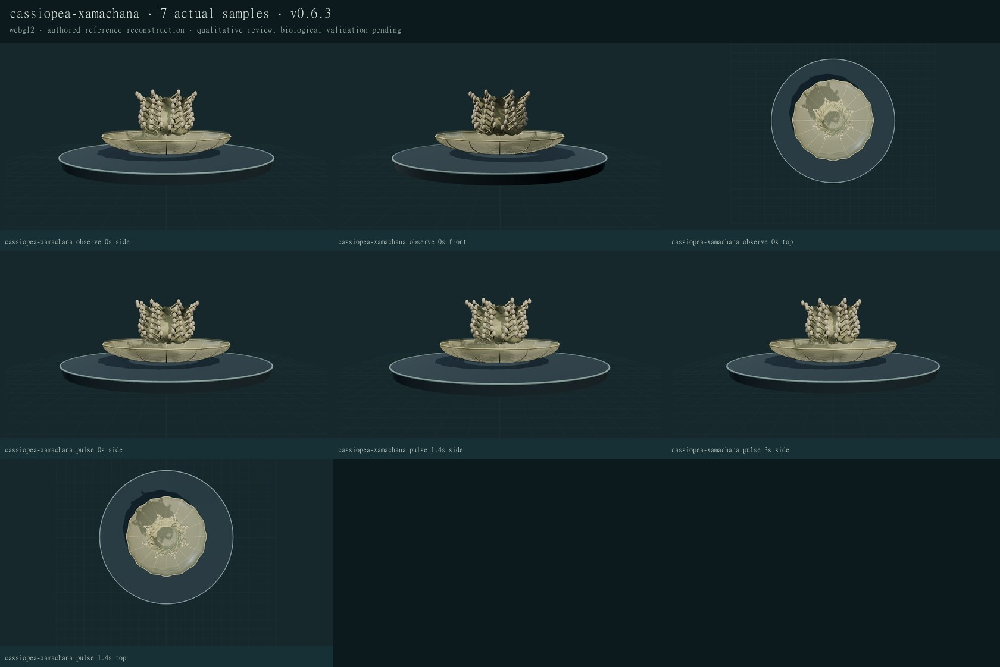
Animalia · Eukaryota · GBIF 2264578 · 7 actual samples · webgl2
Fried-egg jellyfish Cotylorhiza tuberculata
Open this model and its evidence → Compared and revised: Compared the raised central dome and club-bearing oral cluster to the photograph and symbiosis study. Shortened and widened the oral arms and increased appendage density after the first render.
Compared and revised: Compared the raised central dome and club-bearing oral cluster to the photograph and symbiosis study. Shortened and widened the oral arms and increased appendage density after the first render.
Remaining inaccuracies: Clubs and branch hierarchy remain too uniform; tissue optical scattering and detailed mouthlet anatomy are absent. Bell outline interpolation is not a measured contraction or swimming solution.
Real image: Antonio Sontuoso · CC BY-SA 2.0 · Original caption, imaging context and terms. Delivered SHA-256 60b0a209739bd03860f5e79e184d712ab8602dd7af3d17d6efbd2ac047237b05.
Photographed source-identified organism; illumination, individual variation and stage are not calibrated into this authored reconstruction.
Source and movement scope
- Frontiers | Living Inside a Jellyfish: The Symbiosis Case Study of Host-Specialized Dinoflagellates, “Zooxanthellae”, and the Scyphozoan Cotylorhiza tuberculata: Qualitative species morphology/ecology context. No measured shape, trajectories, developmental timing or physiological validation imported. Retrieved source account; general morphology only, not validation of this reconstruction. Retrieval: readable account.
- GBIF · Accepted species taxonomy: Taxonomic name/rank/family matching only; not behavior or native-range evidence.
- Licensed real organism reference and imaging context: Actual reference image and original caption/creator/license; not universal phenotype or biological validation.
- Bell pulse study · partial: Authored reference reconstruction from qualitative morphology and the separately licensed image. Shape, pigmentation, stage, dimensions and playback are not measured or independently validated. Appendage/deformation controls are partial studies; feeding, forces, fluid dynamics and calibrated locomotion are absent.
Same model identifier: reference-cotylorhiza-tuberculata. Display seconds have no calibrated biological time.
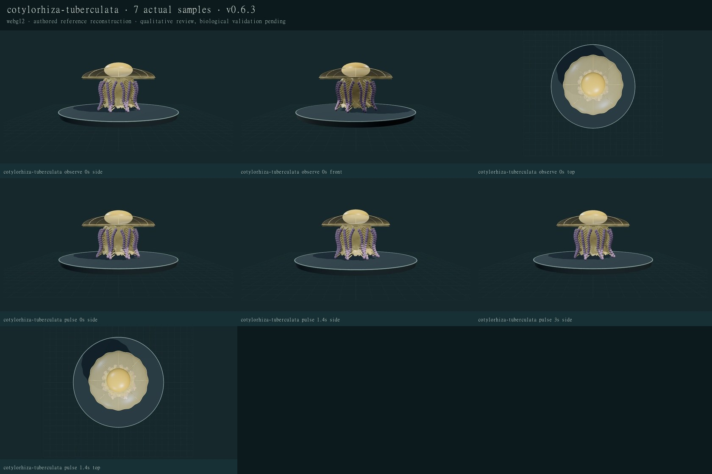
Animalia · Eukaryota · GBIF 5185453 · 7 actual samples · webgl2
Barrel jellyfish Rhizostoma pulmo
Open this model and its evidence → Compared and revised: Compared the domed bell, coloured margin and eight frilled oral arms with the species account. Retained absence of marginal tentacles and widened the oral ribbons.
Compared and revised: Compared the domed bell, coloured margin and eight frilled oral arms with the species account. Retained absence of marginal tentacles and widened the oral ribbons.
Remaining inaccuracies: The 96-lappet outline is approximate, oral epaulets/three-winged terminal structures are incomplete, and the transparent surface is overly smooth. The downloaded MarLIN PDF/indexed description was used with retrieval limitations disclosed.
Real image: Ales Kladnik from Ljubljana, Slovenia · CC BY 2.0 · Original caption, imaging context and terms. Delivered SHA-256 5b05438caa9caca982ad07c7e9ac72badddae766583e4cb44a2ddacabdad8430.
Photographed source-identified organism; illumination, individual variation and stage are not calibrated into this authored reconstruction.
Source and movement scope
- Biology reference · Rhizostoma pulmo: Species-specific morphology context; no biomechanics/coordinates/rates imported. PDF downloaded; indexed species description consulted; no claim of full PDF-text retrieval. Species account/field-guide indexed text consulted, full retrieval limited. Further full-text and expert review required. Full source retrieval was limited; source identity/indexed context and geometry require further review. Retrieval: limited; further reading needed.
- GBIF · Accepted species taxonomy: Taxonomic name/rank/family matching only; not behavior or native-range evidence.
- Licensed real organism reference and imaging context: Actual reference image and original caption/creator/license; not universal phenotype or biological validation.
- Bell pulse study · partial: Authored reference reconstruction from qualitative morphology and the separately licensed image. Shape, pigmentation, stage, dimensions and playback are not measured or independently validated. Appendage/deformation controls are partial studies; feeding, forces, fluid dynamics and calibrated locomotion are absent.
Same model identifier: reference-rhizostoma-pulmo. Display seconds have no calibrated biological time.
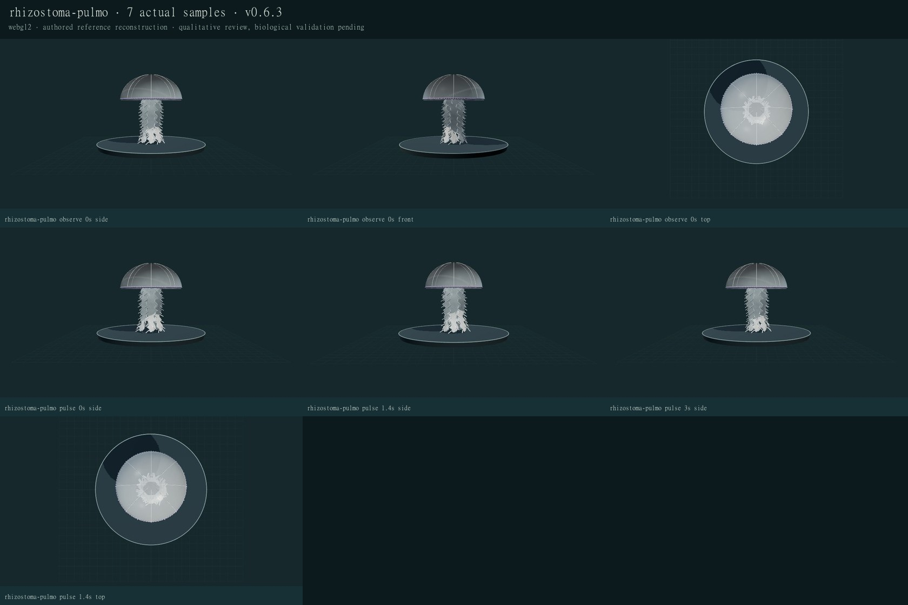
Animalia · Eukaryota · GBIF 5185425 · 7 actual samples · webgl2
Compass jellyfish Chrysaora hysoscella
Open this model and its evidence → Compared and revised: Replaced the uncertain historical Atlantic sea-nettle candidate with a source-identified compass jelly. Matched sixteen radiating V marks, twenty-four marginal tentacles and four oral arms to the MarLIN account.
Compared and revised: Replaced the uncertain historical Atlantic sea-nettle candidate with a source-identified compass jelly. Matched sixteen radiating V marks, twenty-four marginal tentacles and four oral arms to the MarLIN account.
Remaining inaccuracies: Mark widths, 32 marginal lobes, tentacle tapers and frilling are approximate. Oral arms are too regular and do not coil naturally; pulse and appendage movement have no measured timing or hydrodynamics.
Real image: Lviatour · CC BY-SA 3.0 · Original caption, imaging context and terms. Delivered SHA-256 1fcd23dd20b37278480ac2b3e37e6460656d7aa04d07423d0f901346f920d9f0.
Source-identified photographed individual; illumination, stage and variation require specialist verification. Original authored geometry is not a scan of this specimen.
Source and movement scope
- MarLIN · Compass jellyfish: Species account: compass markings, 24 tentacles in eight groups, four oral arms. No calibrated fluid dynamics or pulse timing. Retrieved source account; general morphology only, not validation of this reconstruction. Retrieval: readable account.
- GBIF · Accepted species taxonomy: Taxonomic name/rank/family matching only; not behavior or native-range evidence.
- Licensed real organism reference and imaging context: Actual reference image and original caption/creator/license; not universal phenotype or biological validation.
- Bell pulse study · partial: Authored reference reconstruction from qualitative morphology and the separately licensed image. Shape, pigmentation, stage, dimensions and playback are not measured or independently validated. Appendage/deformation controls are partial studies; feeding, forces, fluid dynamics and calibrated locomotion are absent.
Same model identifier: reference-chrysaora-hysoscella. Display seconds have no calibrated biological time.
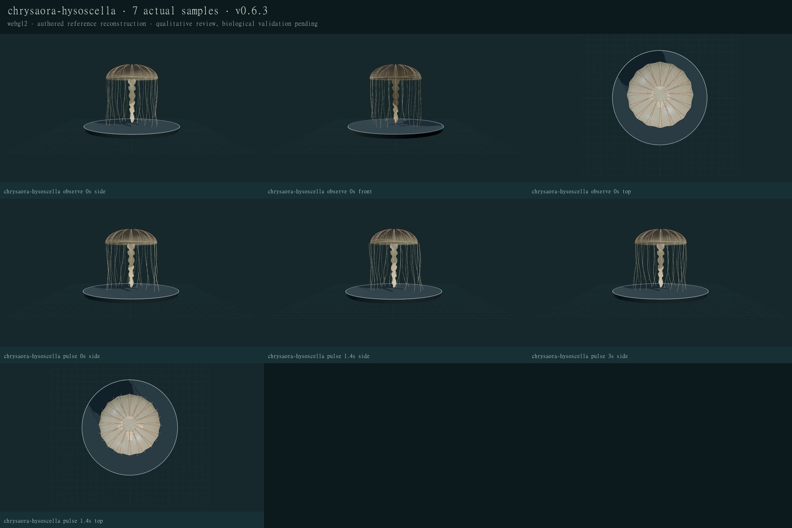
Animalia · Eukaryota · GBIF 2264478 · 7 actual samples · webgl2
Lion’s mane jellyfish Cyanea capillata
Open this model and its evidence →![Lion's mane jellyfish ( Cyanea capillata ) in Gullmarn fjord at Sämstad, Lysekil Municipality, Sweden. This specimen is about 10–12 cm (3.9–4.7 in) in diameter and the tentacles are about 60–80 cm (24–31 in) long. It is photographed from a jetty. The color of the background is made up from algae on the bottom (green), reflection of the sky on the surface (blue) and shadows from boats nearby and objects on the bottom (black). As the jellyfish moved in the water along the shoreline, the surroundings changed color. The photo was taken from the jetty up left in this photo.](../../assets/photo-cyanea-capillata-DR083uyt.jpg) Compared and revised: Checked the lobed bell, eight grouped fine-tentacle sectors and oral-arm distinction against the lion’s-mane reference and account. Captured neutral and compressed bell outlines.
Compared and revised: Checked the lobed bell, eight grouped fine-tentacle sectors and oral-arm distinction against the lion’s-mane reference and account. Captured neutral and compressed bell outlines.
Remaining inaccuracies: Tentacle count is deliberately reduced, the oral curtain is sparse, and colour/mesoglea transmission do not reproduce an individual. No entanglement, drag, prey capture or validated locomotion is represented.
Real image: W.carter · CC0 · Original caption, imaging context and terms. Delivered SHA-256 a874e071040580e6ac211fb0583de83001edff410ea78289194c336fccd8c3de.
Photographed source-identified organism; illumination, individual variation and stage are not calibrated into this authored reconstruction.
Source and movement scope
- Cyanea capillata (Lions mane) | INFORMATION | Animal Diversity Web: Qualitative species morphology/ecology context. No measured shape, trajectories, developmental timing or physiological validation imported. Retrieved source account; general morphology only, not validation of this reconstruction. Retrieval: readable account.
- GBIF · Accepted species taxonomy: Taxonomic name/rank/family matching only; not behavior or native-range evidence.
- Licensed real organism reference and imaging context: Actual reference image and original caption/creator/license; not universal phenotype or biological validation.
- Bell pulse study · partial: Authored reference reconstruction from qualitative morphology and the separately licensed image. Shape, pigmentation, stage, dimensions and playback are not measured or independently validated. Appendage/deformation controls are partial studies; feeding, forces, fluid dynamics and calibrated locomotion are absent.
Same model identifier: reference-cyanea-capillata. Display seconds have no calibrated biological time.
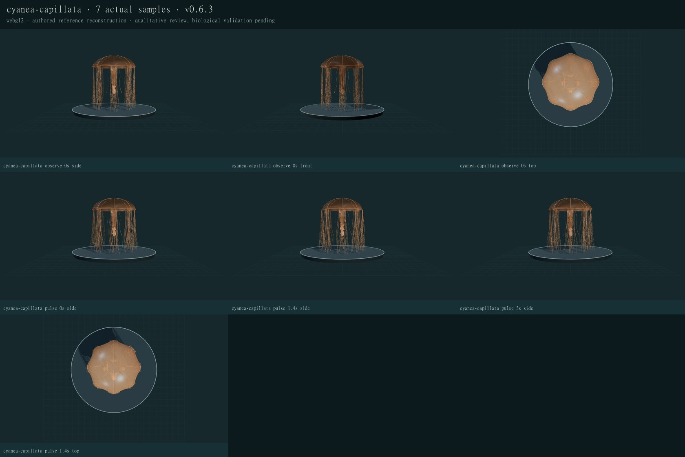
Animalia · Eukaryota · GBIF 2264423 · 7 actual samples · webgl2
Mauve stinger Pelagia noctiluca
Open this model and its evidence → Compared and revised: Compared the mauve bell and pigmented warts, eight marginal tentacles and four oral ribbons. Kept a medusa-only depiction rather than inventing an attached polyp stage.
Compared and revised: Compared the mauve bell and pigmented warts, eight marginal tentacles and four oral ribbons. Kept a medusa-only depiction rather than inventing an attached polyp stage.
Remaining inaccuracies: Warts and nematocyst distributions are schematic, arms are too narrow/regular and lappet anatomy is incomplete. No light-emission mechanism or measured pulse cycle is implemented.
Real image: Hans Hillewaert · CC BY-SA 4.0 · Original caption, imaging context and terms. Delivered SHA-256 5637d69337098e767636625cc182844a0671bbc83b2780d7e601328ec2efd40b.
Photographed source-identified organism; illumination, individual variation and stage are not calibrated into this authored reconstruction.
Source and movement scope
- Pelagia noctiluca | INFORMATION | Animal Diversity Web: Qualitative species morphology/ecology context. No measured shape, trajectories, developmental timing or physiological validation imported. Retrieved source account; general morphology only, not validation of this reconstruction. Retrieval: readable account.
- GBIF · Accepted species taxonomy: Taxonomic name/rank/family matching only; not behavior or native-range evidence.
- Licensed real organism reference and imaging context: Actual reference image and original caption/creator/license; not universal phenotype or biological validation.
- Bell pulse study · partial: Authored reference reconstruction from qualitative morphology and the separately licensed image. Shape, pigmentation, stage, dimensions and playback are not measured or independently validated. Appendage/deformation controls are partial studies; feeding, forces, fluid dynamics and calibrated locomotion are absent.
Same model identifier: reference-pelagia-noctiluca. Display seconds have no calibrated biological time.
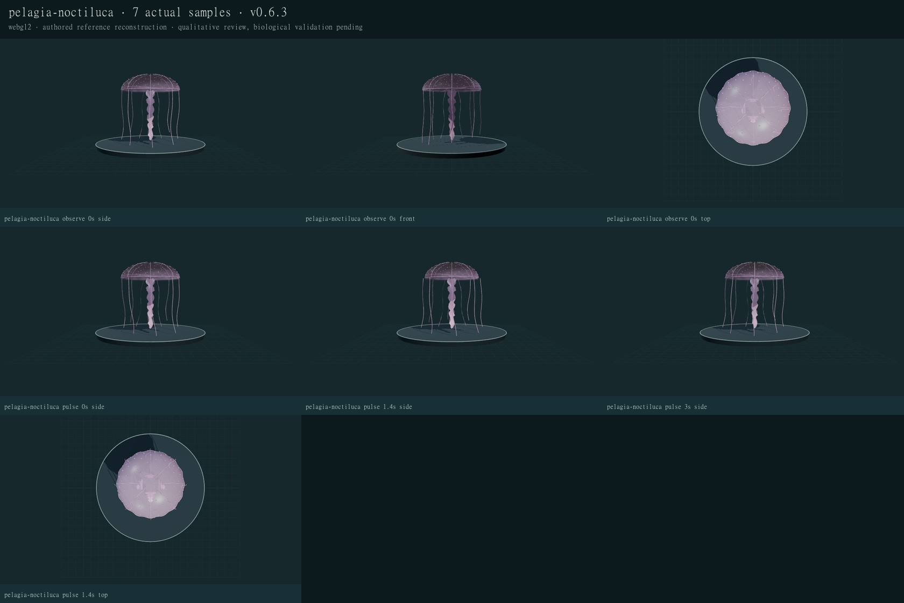
Animalia · Eukaryota · GBIF 2267514 · 7 actual samples · webgl2
Crystal jelly Aequorea victoria
Open this model and its evidence → Compared and revised: Compared the shallow transparent bell, radial canals and tentacle fringe. Reduced bell opacity and retained neutral pigment rather than a permanent green bioluminescent glow.
Compared and revised: Compared the shallow transparent bell, radial canals and tentacle fringe. Reduced bell opacity and retained neutral pigment rather than a permanent green bioluminescent glow.
Remaining inaccuracies: Canals and tentacles remain oversized for visibility, bell optics and gonads/manubrium are incomplete, and no excitation-dependent fluorescence is simulated. Bell deformation is qualitative and uncalibrated.
Real image: Mnolf · CC BY-SA 3.0 · Original caption, imaging context and terms. Delivered SHA-256 32ef076eedf6a45bd3366c0a9f3f50748506dc565e7c9b7b1cfbcd0fb412cec9.
Photographed source-identified organism; illumination, individual variation and stage are not calibrated into this authored reconstruction.
Source and movement scope
- Bioluminescence of Aequorea: Qualitative species morphology/ecology context. No measured shape, trajectories, developmental timing or physiological validation imported. Retrieved source account; general morphology only, not validation of this reconstruction. Retrieval: readable account.
- GBIF · Accepted species taxonomy: Taxonomic name/rank/family matching only; not behavior or native-range evidence.
- Licensed real organism reference and imaging context: Actual reference image and original caption/creator/license; not universal phenotype or biological validation.
- Bell pulse study · partial: Authored reference reconstruction from qualitative morphology and the separately licensed image. Shape, pigmentation, stage, dimensions and playback are not measured or independently validated. Appendage/deformation controls are partial studies; feeding, forces, fluid dynamics and calibrated locomotion are absent.
Same model identifier: reference-aequorea-victoria. Display seconds have no calibrated biological time.
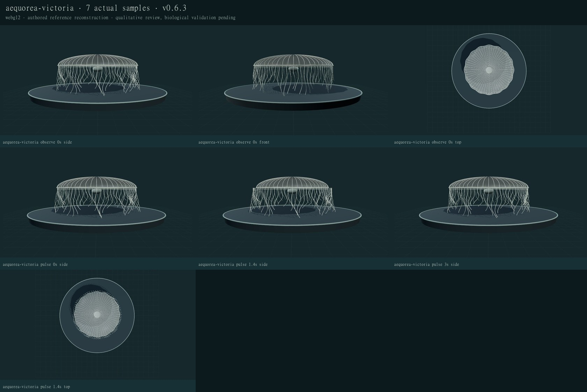
Animalia · Eukaryota · GBIF 4408321 · 7 actual samples · webgl2
Freshwater jellyfish Craspedacusta sowerbii
Open this model and its evidence → Compared and revised: Checked the four radial canals, shallow medusa and marginal tentacle fringe against the freshwater account, preserving the sowerbyi/sowerbii spelling context in the source.
Compared and revised: Checked the four radial canals, shallow medusa and marginal tentacle fringe against the freshwater account, preserving the sowerbyi/sowerbii spelling context in the source.
Remaining inaccuracies: Tentacle groups and statocysts/velum are simplified; the attached polyp and life-cycle transition are not shown. Normalized size is not millimetres and pulse timing is not measured.
Real image: OpenCage · CC BY-SA 2.5 · Original caption, imaging context and terms. Delivered SHA-256 3985d2bd3fa5ebdb8085e15b56bf0c51f8afc508b52496869ff7cfc3058719bb.
Photographed source-identified organism; illumination, individual variation and stage are not calibrated into this authored reconstruction.
Source and movement scope
- Biology reference · Craspedacusta sowerbii: Full morphology/process account under the historical spelling Craspedacusta sowerbyi, linked to accepted GBIF C. sowerbii; no calibrated dimensions, development or motion imported. Retrieval: readable account.
- GBIF · Accepted species taxonomy: Taxonomic name/rank/family matching only; not behavior or native-range evidence.
- Licensed real organism reference and imaging context: Actual reference image and original caption/creator/license; not universal phenotype or biological validation.
- Bell pulse study · partial: Authored reference reconstruction from qualitative morphology and the separately licensed image. Shape, pigmentation, stage, dimensions and playback are not measured or independently validated. Appendage/deformation controls are partial studies; feeding, forces, fluid dynamics and calibrated locomotion are absent.
Same model identifier: reference-craspedacusta-sowerbii. Display seconds have no calibrated biological time.
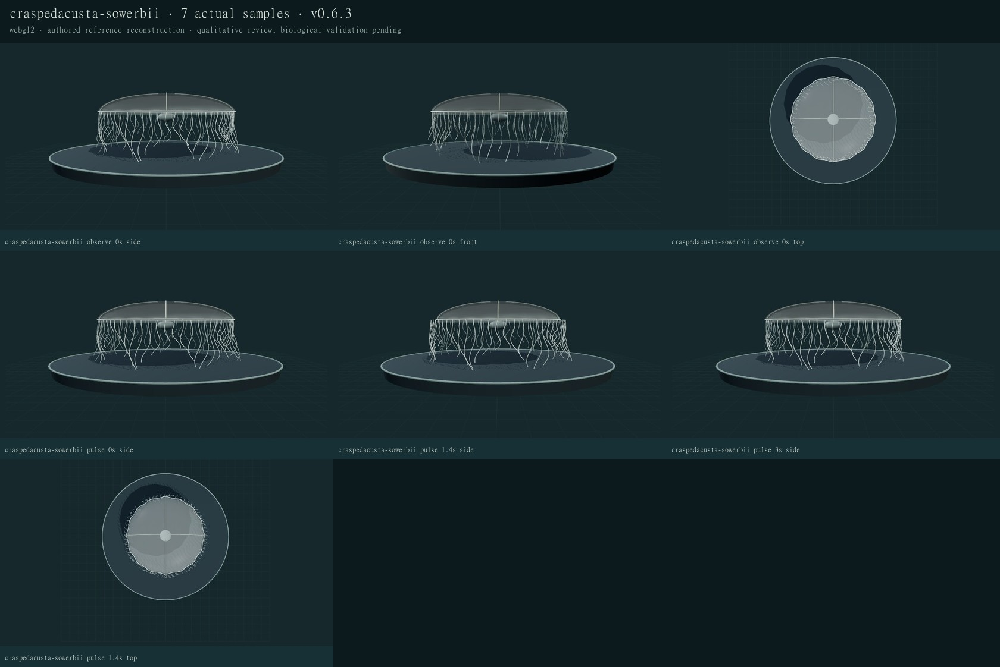
Animalia · Eukaryota · GBIF 2264689 · 7 actual samples · webgl2
Australian box jellyfish Chironex fleckeri
Open this model and its evidence → Compared and revised: Compared a rounded box bell and four corner pedalia with bundled tentacles to the species account. Explicitly labelled the museum reference as a preserved specimen, not a live posture.
Compared and revised: Compared a rounded box bell and four corner pedalia with bundled tentacles to the species account. Explicitly labelled the museum reference as a preserved specimen, not a live posture.
Remaining inaccuracies: Pedalia are simplified, tentacle bundles are reduced, and the 24-eye/rhopalial system, velarium and detailed mesoglea are absent. Preserved texture cannot validate living transparency or swimming motion.
Real image: Emőke Dénes · CC BY-SA 4.0 · Original caption, imaging context and terms. Delivered SHA-256 b8b8645c97f1776869d715e4f05697cdfb3874e40c76efcaa95d2a148f5492d4.
Preserved Grant Museum specimen, not a live swimming posture or natural transparent tissue texture. Museum identification retained.
Source and movement scope
- Chironex fleckeri | INFORMATION | Animal Diversity Web: Qualitative species morphology/ecology context. No measured shape, trajectories, developmental timing or physiological validation imported. Retrieved source account; general morphology only, not validation of this reconstruction. Retrieval: readable account.
- GBIF · Accepted species taxonomy: Taxonomic name/rank/family matching only; not behavior or native-range evidence.
- Licensed real organism reference and imaging context: Actual reference image and original caption/creator/license; not universal phenotype or biological validation.
- Bell pulse study · partial: Authored reference reconstruction from qualitative morphology and the separately licensed image. Shape, pigmentation, stage, dimensions and playback are not measured or independently validated. Appendage/deformation controls are partial studies; feeding, forces, fluid dynamics and calibrated locomotion are absent.
Same model identifier: reference-chironex-fleckeri. Display seconds have no calibrated biological time.
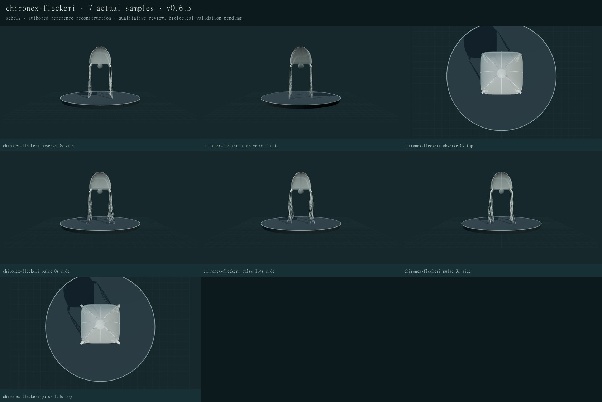
Animalia · Eukaryota · GBIF 2264734 · 3 actual samples · webgl2
Portuguese man-of-war Physalia physalis
Open this model and its evidence → Compared and revised: Compared the elongated float, raised crest and hanging colonial structures with the photographed colony and account; increased crest height after the first render. Kept feeding unavailable.
Compared and revised: Compared the elongated float, raised crest and hanging colonial structures with the photographed colony and account; increased crest height after the first render. Kept feeding unavailable.
Remaining inaccuracies: Zooids remain a coarse array, tentacles are too similar and reduced in length, and gas compartments/crest folds are incomplete. No sail-driven drift, wind response or capture mechanism is implemented.
Real image: Image courtesy of Islands in the Sea 2002, NOAA/OER. · Public domain · Original caption, imaging context and terms. Delivered SHA-256 2ad6d084a3c660cc742b725f30953784ec82601f455549b49fa629f15ab983da.
A photographed colony; tentacle length and float orientation vary. Colour depends on illumination and handling.
Source and movement scope
Same model identifier: reference-physalia-physalis. Display seconds have no calibrated biological time.
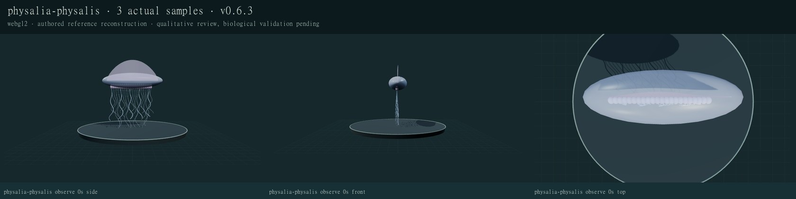
Animalia · Eukaryota · GBIF 2265793 · 3 actual samples · webgl2
By-the-wind sailor Velella velella
Open this model and its evidence → Compared and revised: Checked the oval float, oblique upright sail and underside zooids, distinguishing the floating reconstruction from the stranded reference photograph.
Compared and revised: Checked the oval float, oblique upright sail and underside zooids, distinguishing the floating reconstruction from the stranded reference photograph.
Remaining inaccuracies: Sail ribbing, float chambers and zooid differentiation are incomplete. The organism is a colony, not a medusa; no wind-driven sailing or feeding mechanism is implemented.
Real image: Jymm · Public domain · Original caption, imaging context and terms. Delivered SHA-256 9b9119763ff01faf24f3c060f9ece98abc6157a0c9c66affb8e41c5b96ab9546.
Stranded colony photographed at Roscoff; beach position is not the floating posture.
Source and movement scope
Same model identifier: reference-velella-velella. Display seconds have no calibrated biological time.
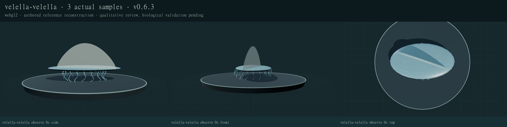
Animalia · Eukaryota · GBIF 5185632 · 3 actual samples · webgl2
Blue button Porpita porpita
Open this model and its evidence → Compared and revised: Compared the central floating disc and radiating tentacle-bearing zooids to the photograph and Smithsonian species context. Kept a colonial interpretation and unavailable feeding.
Compared and revised: Compared the central floating disc and radiating tentacle-bearing zooids to the photograph and Smithsonian species context. Kept a colonial interpretation and unavailable feeding.
Remaining inaccuracies: The radial arrangement is too even and the float lacks internal chamber detail; zooid branches are sparse. Smithsonian direct retrieval was limited; indexed context is distinguished from a full account reading.
Real image: Bruce Moravchik (NOAA) · Public domain · Original caption, imaging context and terms. Delivered SHA-256 d1d4294725e464aa305b3d700134af1e6944975c79a6ce92aec9df0034094e02.
Photographed colony; radial zooids are multiple animals. Not a single jellyfish medusa.
Source and movement scope
- Biology reference · Porpita porpita: Species morphology/taxonomic context; no trajectories, rates or measurements imported. Full source retrieval was limited; source identity/indexed context and geometry require further review. Retrieval: limited; further reading needed.
- GBIF · Accepted species taxonomy: Taxonomic name/rank/family matching only; not behavior or native-range evidence.
- Licensed real organism reference and imaging context: Actual reference image and original caption/creator/license; not universal phenotype or biological validation.
- Particle capture — pending · unavailable: Biological process documented in the species context; no working simulation of this mechanism is claimed.
Same model identifier: reference-porpita-porpita. Display seconds have no calibrated biological time.
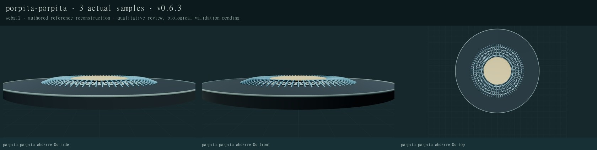
Animalia · Eukaryota · GBIF 2256826 · 7 actual samples · webgl2
Aggregating anemone Anthopleura elegantissima
Open this model and its evidence →![Anthopleura elegantissima - aggregating anemone Location: Laguna Beach, CA, USA The tide was low and the animal was a few inches underwater when the photograph was taken from above the water. There are mussels(probably Mytilus californaius ) and a hermit crab in the pictue. Identification: This anemone has stripes on the oral disks and tentacles with colored tips. These are characteristics that can be used to distinguish it from A. xanthogrammica as per the site linked to below. http://zipcodezoo.com/Animals/A/Anthopleura_elegantissima/](../../assets/photo-anthopleura-elegantissima-B-vEctZF.jpg) Compared and revised: Checked the attached column, broad oral surface and tentacle crown against the Walla Walla morphology account and photograph. Replaced thin tubes with tapered tentacle surfaces and added fine column folds.
Compared and revised: Checked the attached column, broad oral surface and tentacle crown against the Walla Walla morphology account and photograph. Replaced thin tubes with tapered tentacle surfaces and added fine column folds.
Remaining inaccuracies: A single polyp omits aggregations; acrorhagi, attached debris and variable pigmentation are missing. Tentacle bending is a display gesture with no touch response, muscle mechanics or ingestion.
Real image: Davefoc · CC BY-SA 3.0 · Original caption, imaging context and terms. Delivered SHA-256 ae00abec4056842db43e7188290ce984132a4d88dc222b24d0cead83e0ee69c3.
Photographed source-identified organism; illumination, individual variation and stage are not calibrated into this authored reconstruction.
Source and movement scope
- Anthopleura elegantissima: Species morphology/taxonomic context; no trajectories, rates or measurements imported. Retrieved source account; general morphology only, not validation of this reconstruction. Retrieval: readable account.
- GBIF · Accepted species taxonomy: Taxonomic name/rank/family matching only; not behavior or native-range evidence.
- Licensed real organism reference and imaging context: Actual reference image and original caption/creator/license; not universal phenotype or biological validation.
- Tentacle study · partial: Authored reference reconstruction from qualitative morphology and the separately licensed image. Shape, pigmentation, stage, dimensions and playback are not measured or independently validated. Appendage/deformation controls are partial studies; feeding, forces, fluid dynamics and calibrated locomotion are absent.
Same model identifier: reference-anthopleura-elegantissima. Display seconds have no calibrated biological time.
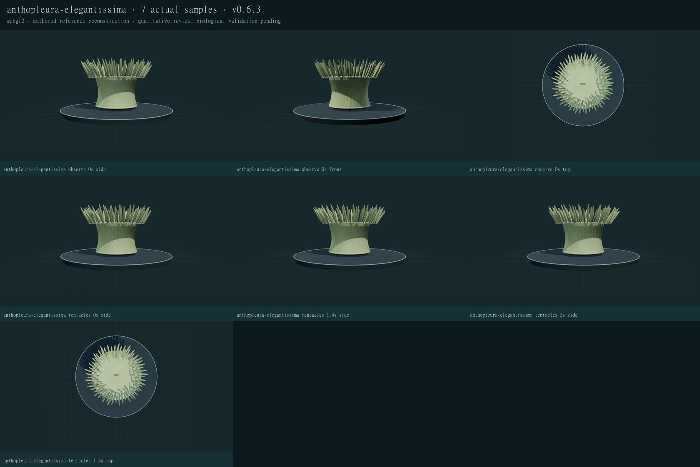
Animalia · Eukaryota · GBIF 2256852 · 7 actual samples · webgl2
Giant green anemone Anthopleura xanthogrammica
Open this model and its evidence → Compared and revised: Compared the green broad oral disc, stout tentacles and attached body against the reference and species account. Thickened/tapered tentacles and maintained the oral slit.
Compared and revised: Compared the green broad oral disc, stout tentacles and attached body against the reference and species account. Thickened/tapered tentacles and maintained the oral slit.
Remaining inaccuracies: The body is too regular and smooth, the green symbiosis/pigment distribution is not resolved, and column texture is approximate. Tentacle motion is uncalibrated; no contraction/feeding mechanism is solved.
Real image: Stan Shebs · CC BY-SA 3.0 · Original caption, imaging context and terms. Delivered SHA-256 cfa77447034e534c97150437d540160daec0104e8656a7eae42616ac22cb1a14.
Photographed source-identified organism; illumination, individual variation and stage are not calibrated into this authored reconstruction.
Source and movement scope
- Anthopleura xanthogrammica (giant green anemone) | INFORMATION | Animal Diversity Web: Qualitative species morphology/ecology context. No measured shape, trajectories, developmental timing or physiological validation imported. Retrieved source account; general morphology only, not validation of this reconstruction. Retrieval: readable account.
- GBIF · Accepted species taxonomy: Taxonomic name/rank/family matching only; not behavior or native-range evidence.
- Licensed real organism reference and imaging context: Actual reference image and original caption/creator/license; not universal phenotype or biological validation.
- Tentacle study · partial: Authored reference reconstruction from qualitative morphology and the separately licensed image. Shape, pigmentation, stage, dimensions and playback are not measured or independently validated. Appendage/deformation controls are partial studies; feeding, forces, fluid dynamics and calibrated locomotion are absent.
Same model identifier: reference-anthopleura-xanthogrammica. Display seconds have no calibrated biological time.
Animalia · Eukaryota · GBIF 2257005 · 7 actual samples · webgl2
Giant carpet anemone Stichodactyla gigantea
Open this model and its evidence → Compared and revised: Compared the strongly folded oral disc and dense short tentacles with the underwater reference, keeping long snakelocks-style tentacles out of this profile.
Compared and revised: Compared the strongly folded oral disc and dense short tentacles with the underwater reference, keeping long snakelocks-style tentacles out of this profile.
Remaining inaccuracies: Folds remain mathematically regular and tentacle density reduced; column verrucae and detailed mouth tissue are absent. Field-guide full-text retrieval was limited. The associated fish do not validate anemone identity; image attribution follows its source.
Real image: Michael arvedlund at da.wikipedia · Public domain · Original caption, imaging context and terms. Delivered SHA-256 ca00e111a6ef941e6e82cc26211c0820a24258683f3dc724f85bc4729d5cb052.
Underwater scene also containing clownfish; the anemone is the reference subject and its taxonomic identification follows the source caption, not the fish identification.
Source and movement scope
- Biology reference · Stichodactyla gigantea: Species-specific morphology context; no biomechanics/coordinates/rates imported. Species account/field-guide indexed text consulted, full retrieval limited. Further full-text and expert review required. Full source retrieval was limited; source identity/indexed context and geometry require further review. Retrieval: limited; further reading needed.
- GBIF · Accepted species taxonomy: Taxonomic name/rank/family matching only; not behavior or native-range evidence.
- Licensed real organism reference and imaging context: Actual reference image and original caption/creator/license; not universal phenotype or biological validation.
- Tentacle study · partial: Authored reference reconstruction from qualitative morphology and the separately licensed image. Shape, pigmentation, stage, dimensions and playback are not measured or independently validated. Appendage/deformation controls are partial studies; feeding, forces, fluid dynamics and calibrated locomotion are absent.
Same model identifier: reference-stichodactyla-gigantea. Display seconds have no calibrated biological time.
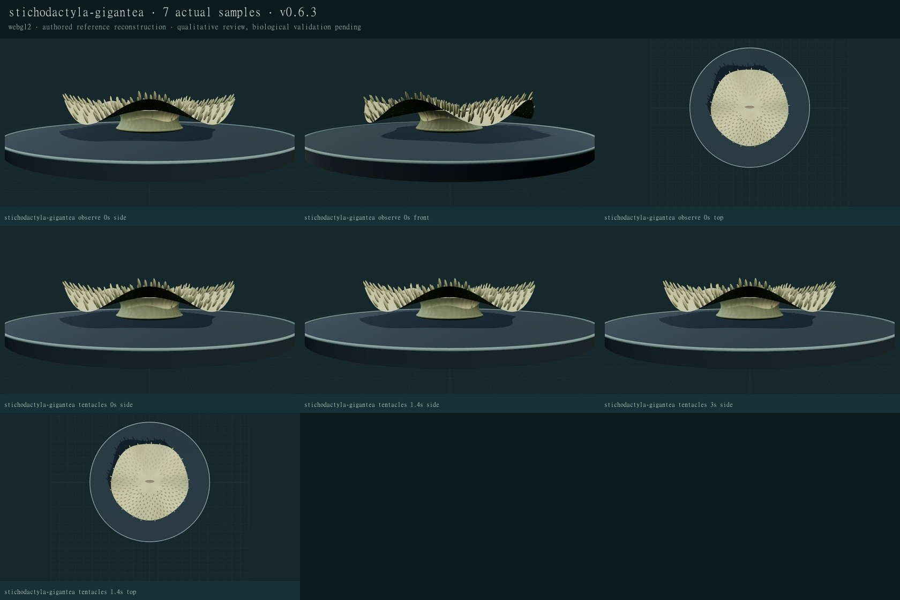
Animalia · Eukaryota · GBIF 8497742 · 7 actual samples · webgl2
Magnificent anemone Radianthus magnifica
Open this model and its evidence → Compared and revised: Reconciled Heteractis magnifica to accepted Radianthus magnifica, retaining the former name in image context. Compared the prominent column and long tentacles; separated tentacle pigment from the pink column.
Compared and revised: Reconciled Heteractis magnifica to accepted Radianthus magnifica, retaining the former name in image context. Compared the prominent column and long tentacles; separated tentacle pigment from the pink column.
Remaining inaccuracies: Column inflation and disc exposure vary in life; this extended form does not reproduce the partly contracted photographed state. Verrucae, full tentacle density and detailed oral anatomy remain incomplete. Gesture timing is unvalidated.
Real image: Nhobgood Nick Hobgood · CC BY-SA 3.0 · Original caption, imaging context and terms. Delivered SHA-256 f027d4b1f1d90b9721f0e62fabc7ebfed390af568168cedfa986290db9a4efeb.
Photograph shows a partly contracted individual and associated anemonefish. Column exposure and disc expansion are variable states. Historical caption Heteractis magnifica reconciled to accepted Radianthus magnifica (GBIF 8497742).
Source and movement scope
- DORIS · Radianthus magnifica: Species morphology and accepted-name context; older image caption Heteractis magnifica is a synonym. No calibrated posture or motion data imported. Retrieved source account; general morphology only, not validation of this reconstruction. Retrieval: readable account.
- GBIF · Accepted species taxonomy: Taxonomic name/rank/family matching only; not behavior or native-range evidence.
- Licensed real organism reference and imaging context: Actual reference image and original caption/creator/license; not universal phenotype or biological validation.
- Tentacle study · partial: Authored reference reconstruction from qualitative morphology and the separately licensed image. Shape, pigmentation, stage, dimensions and playback are not measured or independently validated. Appendage/deformation controls are partial studies; feeding, forces, fluid dynamics and calibrated locomotion are absent.
Same model identifier: reference-radianthus-magnifica. Display seconds have no calibrated biological time.
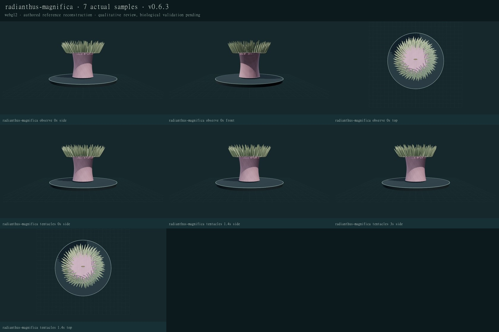
Animalia · Eukaryota · GBIF 5841862 · 7 actual samples · webgl2
Mediterranean tube anemone Cerianthus membranaceus
Open this model and its evidence →![Cylinder anemone ( Cerianthus membranaceus ), Arrábida Natural Park , Portugal. This tube-dwelling anemone has an oral disc with a diameter of up to 40 cm (16 in). There are two whorls of tentacles, amounting to about two hundred tentacles in all. Those in the outer whorl are long and slender and armed with cnidocytes (stinging cells) and are used for catching prey. Tentacles in the inner whorl are shorter and function to transfer captured food to the central mouth. This species is found on the seabed in shallow water in the Mediterranean Sea, the northern Adriatic Sea and the northeastern Atlantic Ocean, its range extending as far north as Britain. The tentacles of Cerianthus membranaceus do not retract, but the whole animal can retreat into its tube. As it does so, some of the tentacles grip the rim and pull the tube closed behind it, effectively making it disappear from view. The tube is normally a permanent home, but if the anemone is disturbed from below, as by a burrowing sea urchin, it can eject itself from its tube, move to a new location and secrete a new tube. C. membranaceus feeds on small fish and planktonic organisms which it catches with its tentacles. It is a protandrous hermaphrodite , starting life as a male and becoming a female later. The lifespan of C. membranaceus in the wild is not known, but some individuals have been occupants of a tank in Naples Aquariu](../../assets/photo-cerianthus-membranaceus-Cvi-liS7.jpg) Compared and revised: Compared the two concentric tentacle systems: long marginal tentacles and shorter inner labial tentacles. Captured the same body through the tentacle gesture and checked its support.
Compared and revised: Compared the two concentric tentacle systems: long marginal tentacles and shorter inner labial tentacles. Captured the same body through the tentacle gesture and checked its support.
Remaining inaccuracies: The sediment tube is represented only by an exposed narrow column, not the full buried body/tube. Tentacle colours, lengths and arrangement are simplified; no withdrawal into sediment or feeding mechanics.
Real image: Diego Delso · CC BY-SA 4.0 · Original caption, imaging context and terms. Delivered SHA-256 1a6361d9c6149ce871782d493c94a65764a154fbf426b414c6cf0aa5ee2393e3.
Photographed source-identified organism; illumination, individual variation and stage are not calibrated into this authored reconstruction.
Source and movement scope
- Cerianthus membranaceus | DORIS: Species-specific morphology context; no biomechanics/coordinates/rates imported. Retrieved source account; general morphology only, not validation of this reconstruction. Retrieval: readable account.
- GBIF · Accepted species taxonomy: Taxonomic name/rank/family matching only; not behavior or native-range evidence.
- Licensed real organism reference and imaging context: Actual reference image and original caption/creator/license; not universal phenotype or biological validation.
- Tentacle study · partial: Authored reference reconstruction from qualitative morphology and the separately licensed image. Shape, pigmentation, stage, dimensions and playback are not measured or independently validated. Appendage/deformation controls are partial studies; feeding, forces, fluid dynamics and calibrated locomotion are absent.
Same model identifier: reference-cerianthus-membranaceus. Display seconds have no calibrated biological time.
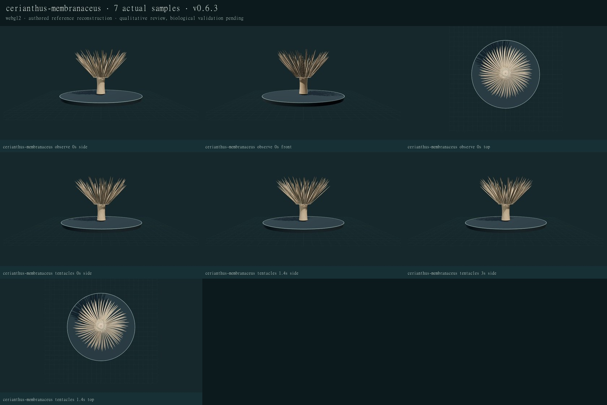
Animalia · Eukaryota · GBIF 2258965 · 7 actual samples · webgl2
Mediterranean cushion coral Cladocora caespitosa
Open this model and its evidence → Compared and revised: Checked a cluster of tubular corallites, radial septal regions and small polyp tentacles against the coral account/reference. Added fine longitudinal relief and same-polyp gestures.
Compared and revised: Checked a cluster of tubular corallites, radial septal regions and small polyp tentacles against the coral account/reference. Added fine longitudinal relief and same-polyp gestures.
Remaining inaccuracies: Corallites are too straight and evenly sized; colony growth, living tissue continuity, septal orders and actual polyp counts are incomplete. No calcification, symbiosis or measured extension is implemented.
Real image: Esculapio · CC BY-SA 3.0 · Original caption, imaging context and terms. Delivered SHA-256 025c3cb808615cd49dbeacb2d59c9ff2f9c7d392b08136bdad97176a20cb3279.
Photographed source-identified organism; illumination, individual variation and stage are not calibrated into this authored reconstruction.
Source and movement scope
- Corals of the World: Species-specific morphology context; no biomechanics/coordinates/rates imported. Retrieved source account; general morphology only, not validation of this reconstruction. Retrieval: readable account.
- GBIF · Accepted species taxonomy: Taxonomic name/rank/family matching only; not behavior or native-range evidence.
- Licensed real organism reference and imaging context: Actual reference image and original caption/creator/license; not universal phenotype or biological validation.
- Polyp extension study · partial: Authored reference reconstruction from qualitative morphology and the separately licensed image. Shape, pigmentation, stage, dimensions and playback are not measured or independently validated. Appendage/deformation controls are partial studies; feeding, forces, fluid dynamics and calibrated locomotion are absent.
Same model identifier: reference-cladocora-caespitosa. Display seconds have no calibrated biological time.
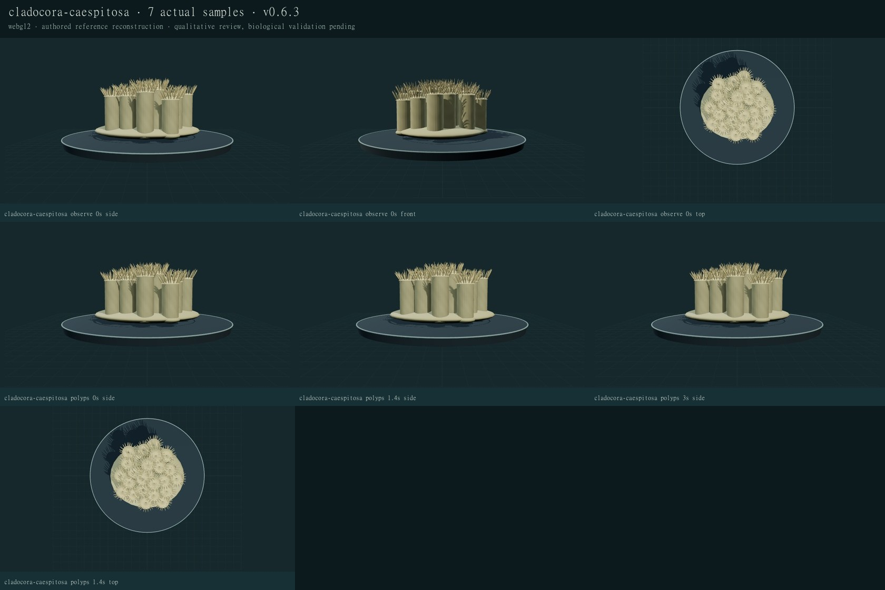
Animalia · Eukaryota · GBIF 2259549 · 7 actual samples · webgl2
Orange cup coral Tubastraea coccinea
Open this model and its evidence → Compared and revised: Compared orange corallites and yellow tentacles with the USGS account and underwater photograph. Preserved the absence of photosymbiont nutrition and used the same colony for gestures.
Compared and revised: Compared orange corallites and yellow tentacles with the USGS account and underwater photograph. Preserved the absence of photosymbiont nutrition and used the same colony for gestures.
Remaining inaccuracies: Corallites are overly uniform and lack mature irregular budding/coenosteum; skeletal septa are simplified. No prey transport, ingestion, colony growth or calibrated polyp extension.
Real image: Diego Delso · CC BY-SA 4.0 · Original caption, imaging context and terms. Delivered SHA-256 40259ac202fb2d0c0b54ea0b8cc42d114fdfcde1c67760def04b0af238b2d4b0.
Photographed source-identified organism; illumination, individual variation and stage are not calibrated into this authored reconstruction.
Source and movement scope
- orange cup coral (Tubastraea coccinea) - Species Profile: Species morphology/taxonomic context; no trajectories, rates or measurements imported. Retrieved source account; general morphology only, not validation of this reconstruction. Retrieval: readable account.
- GBIF · Accepted species taxonomy: Taxonomic name/rank/family matching only; not behavior or native-range evidence.
- Licensed real organism reference and imaging context: Actual reference image and original caption/creator/license; not universal phenotype or biological validation.
- Polyp extension study · partial: Authored reference reconstruction from qualitative morphology and the separately licensed image. Shape, pigmentation, stage, dimensions and playback are not measured or independently validated. Appendage/deformation controls are partial studies; feeding, forces, fluid dynamics and calibrated locomotion are absent.
Same model identifier: reference-tubastraea-coccinea. Display seconds have no calibrated biological time.
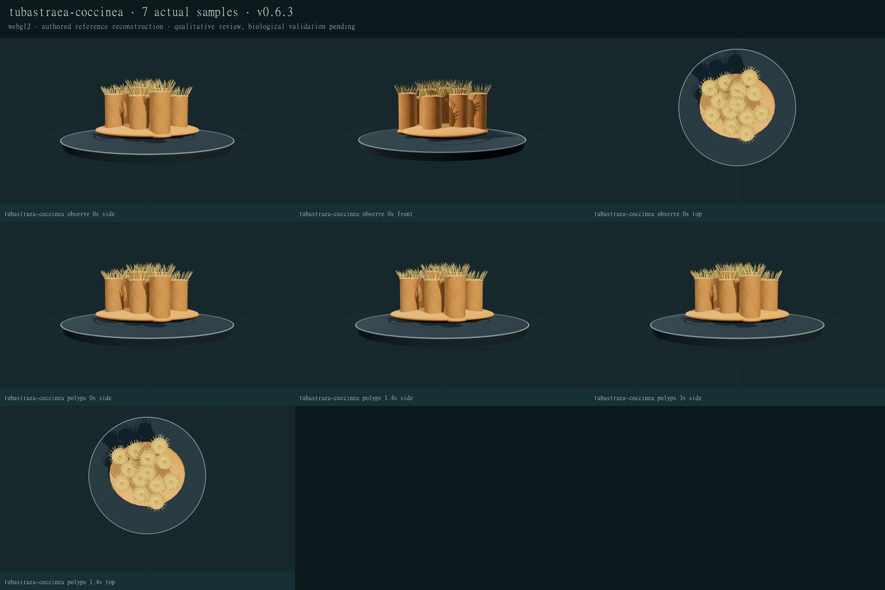
Plantae · Eukaryota · GBIF 3098912 · 7 actual samples · webgl2
Garden cosmos Cosmos bipinnatus
Open this model and its evidence → Compared and revised: Compared the opposite finely divided leaves, yellow disc florets and pink ray florets with NC State and the reference. Corrected overly arched blades and added visible floret veins.
Compared and revised: Compared the opposite finely divided leaves, yellow disc florets and pink ray florets with NC State and the reference. Corrected overly arched blades and added visible floret veins.
Remaining inaccuracies: Fine foliage remains too sparse and regularly divided; ray notches and bracts are approximate. Colour and head number are individual display choices; size interpolation is not germination or development.
Real image: Joydeep · CC BY-SA 3.0 · Original caption, imaging context and terms. Delivered SHA-256 c1afdeee661e9488ff235ad0d8388f7c663a0a1d7c83ef0fb9737c8bfc2611bb.
Photographed individual or cultivated form; colour, head form and life stage may vary. Geometry is an original qualitative illustration, not a scan of this specimen.
Source and movement scope
- Cosmos bipinnatus (Cut Leaf Cosmos, Garden Cosmos, Mexican Aster, Tall Cosmos) | North Carolina Extension Gardener Plant Toolbox: Qualitative species morphology/ecology context. No measured shape, trajectories, developmental timing or physiological validation imported. Retrieved source account; general morphology only, not validation of this reconstruction. Retrieval: readable account.
- GBIF · Accepted species taxonomy: Taxonomic name/rank/family matching only; not behavior or native-range evidence.
- Licensed real organism reference and imaging context: Actual reference image and original caption/creator/license; not universal phenotype or biological validation.
- Anchored size study · partial: Authored reference reconstruction from qualitative morphology and the separately licensed image. Shape, pigmentation, stage, dimensions and playback are not measured or independently validated. Anchored size is a display interpolation, not a growth, ontogenetic or biomechanical simulation.
Same model identifier: reference-cosmos-bipinnatus. Display seconds have no calibrated biological time.
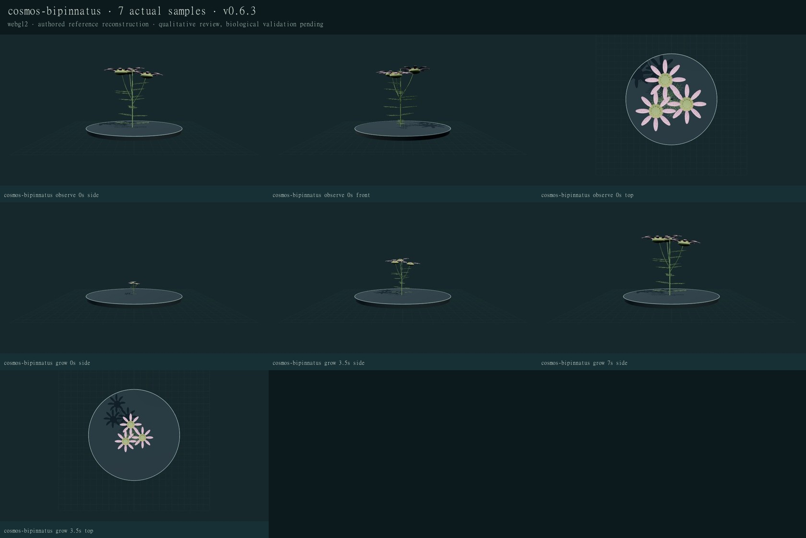
Plantae · Eukaryota · GBIF 3088488 · 7 actual samples · webgl2
Aztec marigold Tagetes erecta
Open this model and its evidence → Compared and revised: Compared pinnately divided foliage and orange/yellow composite heads with the account. Recovered Kurt Stueber’s original credit from the source permission statement and reduced excess bract geometry.
Compared and revised: Compared pinnately divided foliage and orange/yellow composite heads with the account. Recovered Kurt Stueber’s original credit from the source permission statement and reduced excess bract geometry.
Remaining inaccuracies: The flat, partly doubled display head does not reproduce the rounded doubled cultivar in the photograph; leaflet serration, volatile glands and head density are incomplete. Historical file title includes x; cultivation/identification scope is explicit.
Real image: Kurt Stueber (biolib.de; creator credited in original permission statement) · CC BY-SA 3.0 · Original caption, imaging context and terms. Delivered SHA-256 ec9693b64e9af8a83da7e8337f45948b35babcbe245c12a18bc13325869a3556.
Cultivated doubled heads; the illustrated less-doubled form is not a reconstruction of this individual cultivar.
Source and movement scope
- Tagetes erecta (African Marigold, American Marigold, Aztec Marigold, Big Marigold, Mexican Marigold) | North Carolina Extension Gardener Plant Toolbox: Qualitative species morphology/ecology context. No measured shape, trajectories, developmental timing or physiological validation imported. Retrieved source account; general morphology only, not validation of this reconstruction. Retrieval: readable account.
- GBIF · Accepted species taxonomy: Taxonomic name/rank/family matching only; not behavior or native-range evidence.
- Licensed real organism reference and imaging context: Actual reference image and original caption/creator/license; not universal phenotype or biological validation.
- Anchored size study · partial: Authored reference reconstruction from qualitative morphology and the separately licensed image. Shape, pigmentation, stage, dimensions and playback are not measured or independently validated. Anchored size is a display interpolation, not a growth, ontogenetic or biomechanical simulation.
Same model identifier: reference-tagetes-erecta. Display seconds have no calibrated biological time.
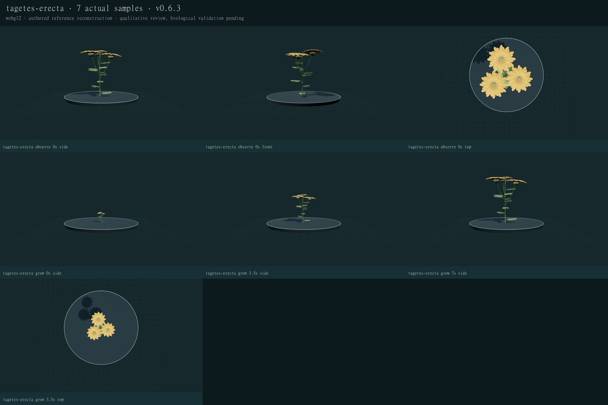
Plantae · Eukaryota · GBIF 5391480 · 7 actual samples · webgl2
Pot marigold Calendula officinalis
Open this model and its evidence → Compared and revised: Checked oblong alternate leaves and orange composite heads. Flattened curled blades after the side-view review and retained separate ray and disc florets.
Compared and revised: Checked oblong alternate leaves and orange composite heads. Flattened curled blades after the side-view review and retained separate ray and disc florets.
Remaining inaccuracies: Leaves/stems remain too sparse, head pigment is muted, disc tubes/bracts are simplified and cultivar diversity is not modelled. Uniform display scaling does not reproduce leaf initiation, flowering or development.
Real image: Betty Cai · CC BY-SA 4.0 · Original caption, imaging context and terms. Delivered SHA-256 ed20414aeaea23caddbebb6815f2844119a5db51374b11b69e177382efe8f107.
Photographed individual or cultivated form; colour, head form and life stage may vary. Geometry is an original qualitative illustration, not a scan of this specimen.
Source and movement scope
- Calendula officinalis (Calendula, Calendula (Pot Marigold), Common Marigold, Garden Marigold, Gold bloom, Holligold, Marigold, Mary Bud, Pot Marigold, Ruddles) | North Carolina Extension Gardener Plant Toolbox: Qualitative species morphology/ecology context. No measured shape, trajectories, developmental timing or physiological validation imported. Retrieved source account; general morphology only, not validation of this reconstruction. Retrieval: readable account.
- GBIF · Accepted species taxonomy: Taxonomic name/rank/family matching only; not behavior or native-range evidence.
- Licensed real organism reference and imaging context: Actual reference image and original caption/creator/license; not universal phenotype or biological validation.
- Anchored size study · partial: Authored reference reconstruction from qualitative morphology and the separately licensed image. Shape, pigmentation, stage, dimensions and playback are not measured or independently validated. Anchored size is a display interpolation, not a growth, ontogenetic or biomechanical simulation.
Same model identifier: reference-calendula-officinalis. Display seconds have no calibrated biological time.
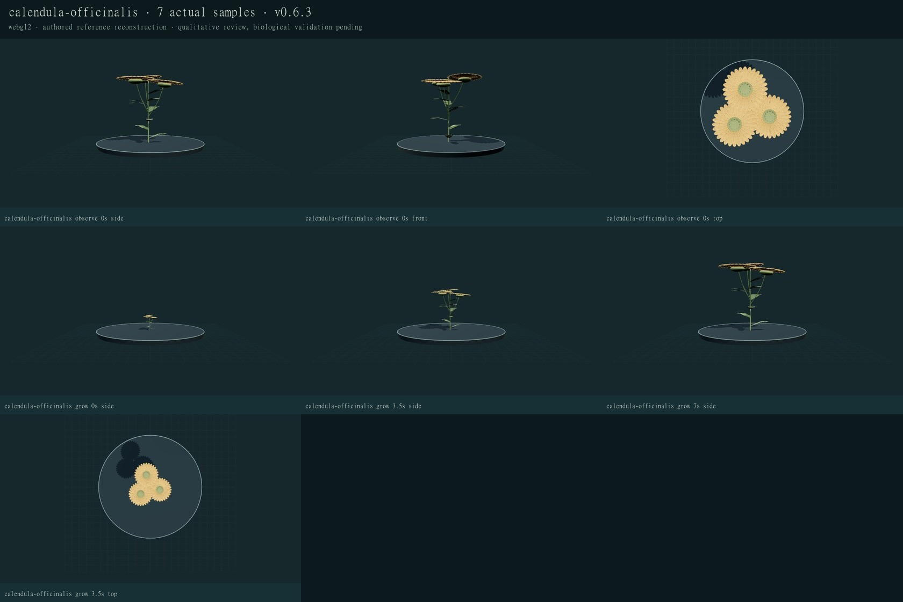
Plantae · Eukaryota · GBIF 3111754 · 7 actual samples · webgl2
Elegant zinnia Zinnia elegans
Open this model and its evidence → Compared and revised: Compared opposite broad leaves and terminal heads with the account and focus-stacked cultivated reference. Kept the species rather than assigning the image to a named cultivar.
Compared and revised: Compared opposite broad leaves and terminal heads with the account and focus-stacked cultivated reference. Kept the species rather than assigning the image to a named cultivar.
Remaining inaccuracies: A less-doubled illustrative head differs from the photographed cultivated flower; leaf roughness, phyllaries and branching are simplified. Neither focus stacking nor size playback validates a whole living plant.
Real image: Ermell · CC BY-SA 4.0 · Original caption, imaging context and terms. Delivered SHA-256 76628abefd21c374bf28b6ee66d37ecc816046cd57714ac32abd635192d89cd2.
Focus-stacked photograph of a cultivated flower head; colour and doubled ray count are not species-wide constants.
Source and movement scope
- Zinnia elegans (Common Zinnia, Zinnia) | North Carolina Extension Gardener Plant Toolbox: Qualitative species morphology/ecology context. No measured shape, trajectories, developmental timing or physiological validation imported. Retrieved source account; general morphology only, not validation of this reconstruction. Retrieval: readable account.
- GBIF · Accepted species taxonomy: Taxonomic name/rank/family matching only; not behavior or native-range evidence.
- Licensed real organism reference and imaging context: Actual reference image and original caption/creator/license; not universal phenotype or biological validation.
- Anchored size study · partial: Authored reference reconstruction from qualitative morphology and the separately licensed image. Shape, pigmentation, stage, dimensions and playback are not measured or independently validated. Anchored size is a display interpolation, not a growth, ontogenetic or biomechanical simulation.
Same model identifier: reference-zinnia-elegans. Display seconds have no calibrated biological time.
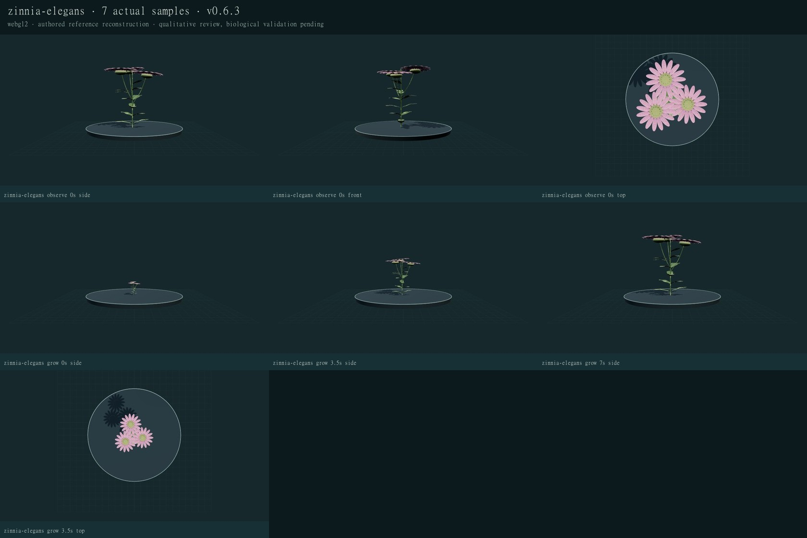
Plantae · Eukaryota · GBIF 3114225 · 7 actual samples · webgl2
Black-eyed Susan Rudbeckia hirta
Open this model and its evidence → Compared and revised: Compared yellow rays, a dark raised disc and rough foliage with the photograph and NC State account; retained coarse stem hairs and differentiated the central cone.
Compared and revised: Compared yellow rays, a dark raised disc and rough foliage with the photograph and NC State account; retained coarse stem hairs and differentiated the central cone.
Remaining inaccuracies: The disc is too regular, rays/leaf shapes lack natural variation, and leaf hairs/venation are incomplete. The model omits roots and life-history stages; size scaling is not biological growth.
Real image: Krzysztof Ziarnek, Kenraiz · CC BY-SA 4.0 · Original caption, imaging context and terms. Delivered SHA-256 3fb3a040a6844ed79579d10fb1abe9f129d5335875a83f01d18aa8a832d9c8e7.
Photographed individual or cultivated form; colour, head form and life stage may vary. Geometry is an original qualitative illustration, not a scan of this specimen.
Source and movement scope
- Rudbeckia hirta (Black Eyed Susan, Black-eyed Susan, Gloriosa Daisy) | North Carolina Extension Gardener Plant Toolbox: Qualitative species morphology/ecology context. No measured shape, trajectories, developmental timing or physiological validation imported. Retrieved source account; general morphology only, not validation of this reconstruction. Retrieval: readable account.
- GBIF · Accepted species taxonomy: Taxonomic name/rank/family matching only; not behavior or native-range evidence.
- Licensed real organism reference and imaging context: Actual reference image and original caption/creator/license; not universal phenotype or biological validation.
- Anchored size study · partial: Authored reference reconstruction from qualitative morphology and the separately licensed image. Shape, pigmentation, stage, dimensions and playback are not measured or independently validated. Anchored size is a display interpolation, not a growth, ontogenetic or biomechanical simulation.
Same model identifier: reference-rudbeckia-hirta. Display seconds have no calibrated biological time.
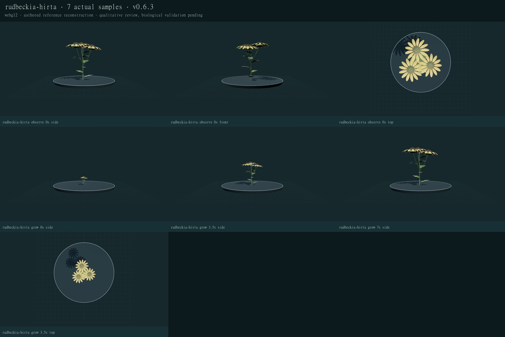
Plantae · Eukaryota · GBIF 3150935 · 7 actual samples · webgl2
Purple coneflower Echinacea purpurea
Open this model and its evidence → Compared and revised: Checked drooping purple rays and raised spiny disc, plus veined rough leaves. Captured the same aerial shoot at three display sizes and three orientations.
Compared and revised: Checked drooping purple rays and raised spiny disc, plus veined rough leaves. Captured the same aerial shoot at three display sizes and three orientations.
Remaining inaccuracies: Cone spines and florets are stylized, leaves are too small/sparse and venation simplified; cultivar variation is not reconstructed. No floral maturation or pollination dynamics are simulated.
Real image: Eric Hunt · CC BY-SA 4.0 · Original caption, imaging context and terms. Delivered SHA-256 a9f477433a98611bf2812271e804f4e4c20c6d3a1788d6f7b69fa8d9bef314bd.
Photographed individual or cultivated form; colour, head form and life stage may vary. Geometry is an original qualitative illustration, not a scan of this specimen.
Source and movement scope
- Echinacea purpurea (Coneflower, Eastern Purple Coneflower, Purple Coneflower, Purple Rudbeckia) | North Carolina Extension Gardener Plant Toolbox: Qualitative species morphology/ecology context. No measured shape, trajectories, developmental timing or physiological validation imported. Retrieved source account; general morphology only, not validation of this reconstruction. Retrieval: readable account.
- GBIF · Accepted species taxonomy: Taxonomic name/rank/family matching only; not behavior or native-range evidence.
- Licensed real organism reference and imaging context: Actual reference image and original caption/creator/license; not universal phenotype or biological validation.
- Anchored size study · partial: Authored reference reconstruction from qualitative morphology and the separately licensed image. Shape, pigmentation, stage, dimensions and playback are not measured or independently validated. Anchored size is a display interpolation, not a growth, ontogenetic or biomechanical simulation.
Same model identifier: reference-echinacea-purpurea. Display seconds have no calibrated biological time.
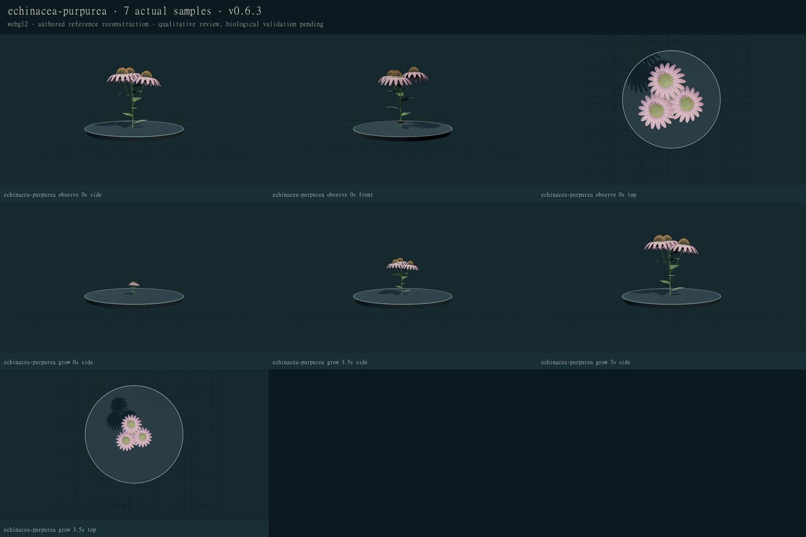
Plantae · Eukaryota · GBIF 8848598 · 7 actual samples · webgl2
Oxeye daisy Leucanthemum vulgare
Open this model and its evidence → Compared and revised: Compared white rays, yellow disc and toothed foliage with the species account, separating the photographed Filigran cultivar head from a general whole-shoot illustration.
Compared and revised: Compared white rays, yellow disc and toothed foliage with the species account, separating the photographed Filigran cultivar head from a general whole-shoot illustration.
Remaining inaccuracies: Basal spoon-shaped foliage is insufficiently developed, stem leaves and branching are too regular, and the photo cannot validate whole-plant habit. No flowering development is claimed.
Real image: Photo by and (c)2008 Derek Ramsey ( Ram-Man ). Co-attribution must be given to the Chanticleer Garden. · CC BY-SA 3.0 · Original caption, imaging context and terms. Delivered SHA-256 50b06b0f53cb93b2d28793cf3cd40c0409c1d412fa1dbf4971ab123b92c59345.
Photographed cultivated form Filigran; only its head is shown, so whole-plant habit is checked against the species account.
Source and movement scope
- Leucanthemum vulgare (Bruise Wort, Common Daisy, Dog Daisy, Field Daisy, Marguerite, Marguerite Blanche, Moon Daisy, Ox-eye Daisy, Oxeye Daisy) | North Carolina Extension Gardener Plant Toolbox: Qualitative species morphology/ecology context. No measured shape, trajectories, developmental timing or physiological validation imported. Retrieved source account; general morphology only, not validation of this reconstruction. Retrieval: readable account.
- GBIF · Accepted species taxonomy: Taxonomic name/rank/family matching only; not behavior or native-range evidence.
- Licensed real organism reference and imaging context: Actual reference image and original caption/creator/license; not universal phenotype or biological validation.
- Anchored size study · partial: Authored reference reconstruction from qualitative morphology and the separately licensed image. Shape, pigmentation, stage, dimensions and playback are not measured or independently validated. Anchored size is a display interpolation, not a growth, ontogenetic or biomechanical simulation.
Same model identifier: reference-leucanthemum-vulgare. Display seconds have no calibrated biological time.
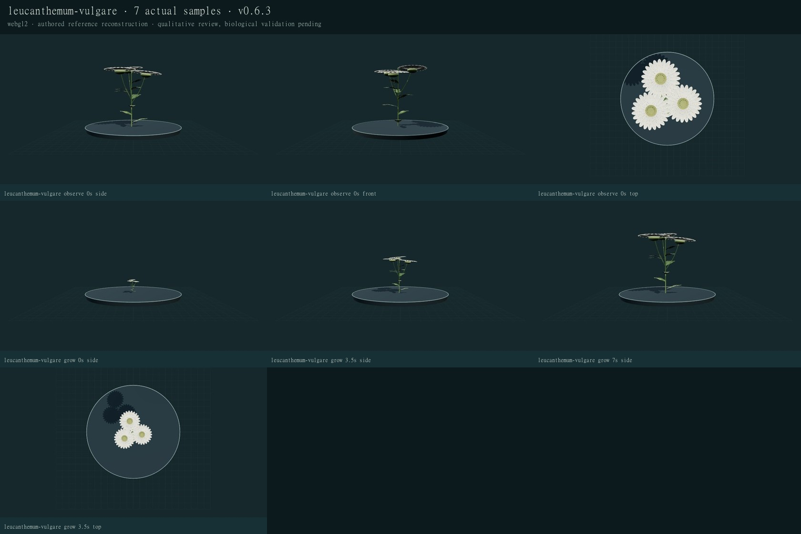
Plantae · Eukaryota · GBIF 3089561 · 7 actual samples · webgl2
Cornflower Centaurea cyanus
Open this model and its evidence → Compared and revised: Compared enlarged blue peripheral florets and narrow leaves; corrected green peripheral tooth tips and yellow disc colouring from the first geometry pass to blue/purple.
Compared and revised: Compared enlarged blue peripheral florets and narrow leaves; corrected green peripheral tooth tips and yellow disc colouring from the first geometry pass to blue/purple.
Remaining inaccuracies: Funnel-shaped florets remain too flat, involucral fringe/bract overlap and woolly leaf texture are incomplete. The head is a qualitative illustration, not a calibrated floral scan or developmental sequence.
Real image: Orikrin1998 · CC BY 3.0 · Original caption, imaging context and terms. Delivered SHA-256 c9e369c53a726046e528dba738b6acba8a659432adf556e1d9bf5ac33ece53ef.
Photographed individual or cultivated form; colour, head form and life stage may vary. Geometry is an original qualitative illustration, not a scan of this specimen.
Source and movement scope
- Centaurea cyanus (Bachelor's Button, Bachelors Buttons, Bluebottle, Cornflower) | North Carolina Extension Gardener Plant Toolbox: Qualitative species morphology/ecology context. No measured shape, trajectories, developmental timing or physiological validation imported. Retrieved source account; general morphology only, not validation of this reconstruction. Retrieval: readable account.
- GBIF · Accepted species taxonomy: Taxonomic name/rank/family matching only; not behavior or native-range evidence.
- Licensed real organism reference and imaging context: Actual reference image and original caption/creator/license; not universal phenotype or biological validation.
- Anchored size study · partial: Authored reference reconstruction from qualitative morphology and the separately licensed image. Shape, pigmentation, stage, dimensions and playback are not measured or independently validated. Anchored size is a display interpolation, not a growth, ontogenetic or biomechanical simulation.
Same model identifier: reference-centaurea-cyanus. Display seconds have no calibrated biological time.
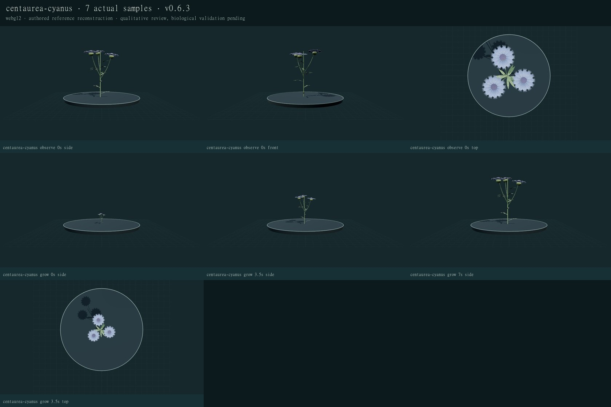
Plantae · Eukaryota · GBIF 5387859 · 7 actual samples · webgl2
Blanket flower Gaillardia aristata
Open this model and its evidence → Compared and revised: Compared red-based/yellow-tipped ray florets and raised reddish disc with the field photograph/account. Added a pigment transition and three-part ray-tip relief.
Compared and revised: Compared red-based/yellow-tipped ray florets and raised reddish disc with the field photograph/account. Added a pigment transition and three-part ray-tip relief.
Remaining inaccuracies: Ray-tip teeth are too regular, leaf pubescence and basal foliage sparse, and natural ray colour variation is not calibrated. The display lacks roots, fruits and measured growth.
Real image: Walter Siegmund (talk) · CC BY-SA 4.0 · Original caption, imaging context and terms. Delivered SHA-256 e60eea534b727e4ec76ca3c374b066d7fa5cff3dbcf2b92c5f87a46211912d84.
Photographed individual or cultivated form; colour, head form and life stage may vary. Geometry is an original qualitative illustration, not a scan of this specimen.
Source and movement scope
- Gaillardia aristata (Beach Daisy, Blanketflower, Blanket Flower, Brown-eyed Susan, Common Gaillardia, Great Blanket Flower, Indian Blanketflower, Spring Salmon's Eye) | North Carolina Extension Gardener Plant Toolbox: Qualitative species morphology/ecology context. No measured shape, trajectories, developmental timing or physiological validation imported. Retrieved source account; general morphology only, not validation of this reconstruction. Retrieval: readable account.
- GBIF · Accepted species taxonomy: Taxonomic name/rank/family matching only; not behavior or native-range evidence.
- Licensed real organism reference and imaging context: Actual reference image and original caption/creator/license; not universal phenotype or biological validation.
- Anchored size study · partial: Authored reference reconstruction from qualitative morphology and the separately licensed image. Shape, pigmentation, stage, dimensions and playback are not measured or independently validated. Anchored size is a display interpolation, not a growth, ontogenetic or biomechanical simulation.
Same model identifier: reference-gaillardia-aristata. Display seconds have no calibrated biological time.
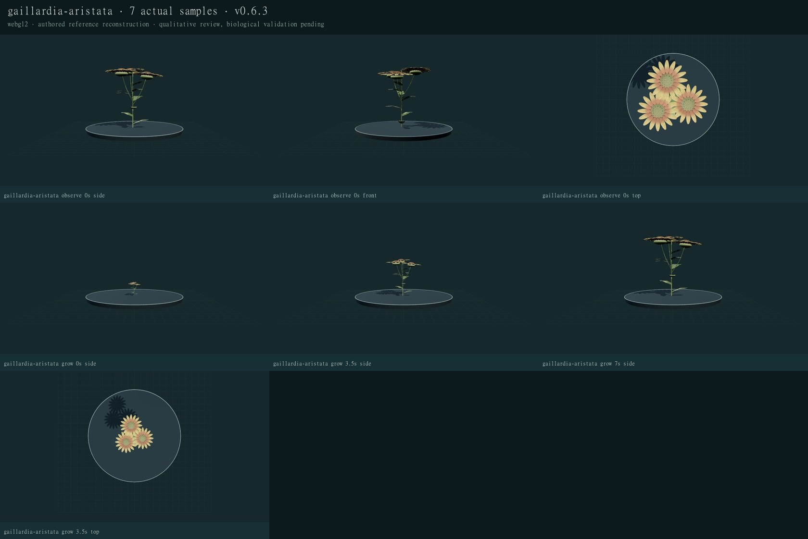
Plantae · Eukaryota · GBIF 3133950 · 7 actual samples · webgl2
Plains coreopsis Coreopsis tinctoria
Open this model and its evidence → Compared and revised: Checked yellow rays with dark bases, a dark central disc and finely divided foliage against the photograph/account; recovered Cory Maylett’s full creator name from the caption.
Compared and revised: Checked yellow rays with dark bases, a dark central disc and finely divided foliage against the photograph/account; recovered Cory Maylett’s full creator name from the caption.
Remaining inaccuracies: Leaf segments and ray-tip lobes remain too even, central florets are coarse and whole-shoot branching is sparse. Size interpolation is not leaf development or flowering.
Real image: Cory Maylett · CC BY-SA 3.0 · Original caption, imaging context and terms. Delivered SHA-256 82b4af603b241cff625cd9f4b12dc08452658f48ed9844aa94abe1f0f7a6432b.
Photographed individual or cultivated form; colour, head form and life stage may vary. Geometry is an original qualitative illustration, not a scan of this specimen.
Source and movement scope
- Coreopsis tinctoria (Garden Coreopsis, Golden Coreopsis, Goldenwave, Plains Coreopsis, Tick-seed) | North Carolina Extension Gardener Plant Toolbox: Qualitative species morphology/ecology context. No measured shape, trajectories, developmental timing or physiological validation imported. Retrieved source account; general morphology only, not validation of this reconstruction. Retrieval: readable account.
- GBIF · Accepted species taxonomy: Taxonomic name/rank/family matching only; not behavior or native-range evidence.
- Licensed real organism reference and imaging context: Actual reference image and original caption/creator/license; not universal phenotype or biological validation.
- Anchored size study · partial: Authored reference reconstruction from qualitative morphology and the separately licensed image. Shape, pigmentation, stage, dimensions and playback are not measured or independently validated. Anchored size is a display interpolation, not a growth, ontogenetic or biomechanical simulation.
Same model identifier: reference-coreopsis-tinctoria. Display seconds have no calibrated biological time.
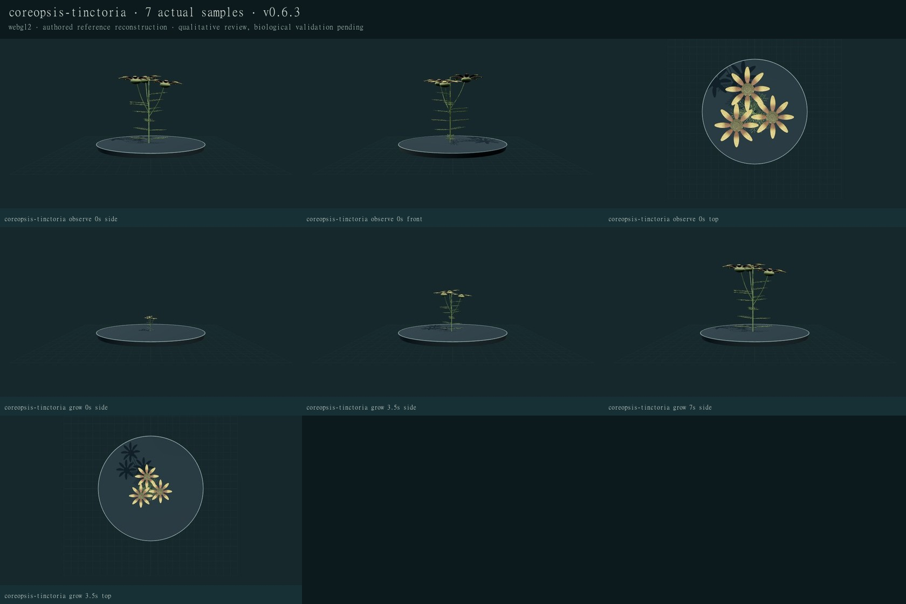
Plantae · Eukaryota · GBIF 3119175 · 7 actual samples · webgl2
Jerusalem artichoke Helianthus tuberosus
Open this model and its evidence → Compared and revised: Compared broad rough leaves and smaller yellow heads with the photographed aerial shoot and NC State account; recovered Paul Fenwick’s original creator credit.
Compared and revised: Compared broad rough leaves and smaller yellow heads with the photographed aerial shoot and NC State account; recovered Paul Fenwick’s original creator credit.
Remaining inaccuracies: Lower opposite/upper alternate transitions and leaf serration are incomplete; the shoot is too regular and heads lack fine reproductive structures. Underground stolons and tubers are explicitly absent, not shown growing.
Real image: Paul Fenwick · CC BY-SA 3.0 · Original caption, imaging context and terms. Delivered SHA-256 085c80ac4dcc10b03225a04c85c8abc5d03fa51cd79f7a9e9d00bca06864203d.
Photographed aerial flowering shoot; underground stolons/tubers are absent from the image and from this shoot-only reconstruction.
Source and movement scope
- Helianthus tuberosus (Earth Apple, Jerusalem Artichoke, Sunchoke, Sunroot) | North Carolina Extension Gardener Plant Toolbox: Species morphology/taxonomic context; no trajectories, rates or measurements imported. Retrieved source account; general morphology only, not validation of this reconstruction. Retrieval: readable account.
- GBIF · Accepted species taxonomy: Taxonomic name/rank/family matching only; not behavior or native-range evidence.
- Licensed real organism reference and imaging context: Actual reference image and original caption/creator/license; not universal phenotype or biological validation.
- Anchored size study · partial: Authored reference reconstruction from qualitative morphology and the separately licensed image. Shape, pigmentation, stage, dimensions and playback are not measured or independently validated. Anchored size is a display interpolation, not a growth, ontogenetic or biomechanical simulation.
Same model identifier: reference-helianthus-tuberosus. Display seconds have no calibrated biological time.
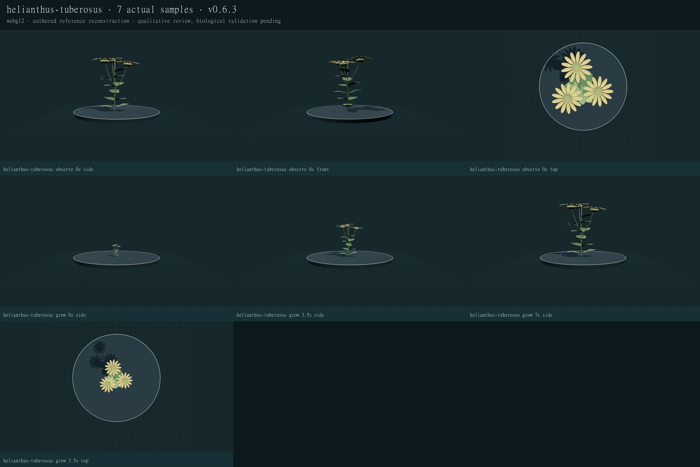
Plantae · Eukaryota · GBIF 3118274 · 7 actual samples · webgl2
Common tansy Tanacetum vulgare
Open this model and its evidence → Compared and revised: Checked divided foliage and clusters of button heads without rays. Removed unnecessarily detailed tiny bract-vein meshes to keep the same geometry interactive.
Compared and revised: Checked divided foliage and clusters of button heads without rays. Removed unnecessarily detailed tiny bract-vein meshes to keep the same geometry interactive.
Remaining inaccuracies: Inflorescence branching is too radial/even, button heads and leaf divisions are approximate, and rhizomes are omitted. Display scaling is not clonal spread, development or measured growth.
Real image: Ivar Leidus · CC BY-SA 3.0 · Original caption, imaging context and terms. Delivered SHA-256 677c64901159bc281479188ca12d668d115ee66641c0d964cfe489d062bcc6c8.
Photographed individual or cultivated form; colour, head form and life stage may vary. Geometry is an original qualitative illustration, not a scan of this specimen.
Source and movement scope
- Tanacetum vulgare (Bitter Buttons, Common Tansy, Cow Bitter, Garden Tansy, Golden Buttons, Tansy) | North Carolina Extension Gardener Plant Toolbox: Qualitative species morphology/ecology context. No measured shape, trajectories, developmental timing or physiological validation imported. Retrieved source account; general morphology only, not validation of this reconstruction. Retrieval: readable account.
- GBIF · Accepted species taxonomy: Taxonomic name/rank/family matching only; not behavior or native-range evidence.
- Licensed real organism reference and imaging context: Actual reference image and original caption/creator/license; not universal phenotype or biological validation.
- Anchored size study · partial: Authored reference reconstruction from qualitative morphology and the separately licensed image. Shape, pigmentation, stage, dimensions and playback are not measured or independently validated. Anchored size is a display interpolation, not a growth, ontogenetic or biomechanical simulation.
Same model identifier: reference-tanacetum-vulgare. Display seconds have no calibrated biological time.
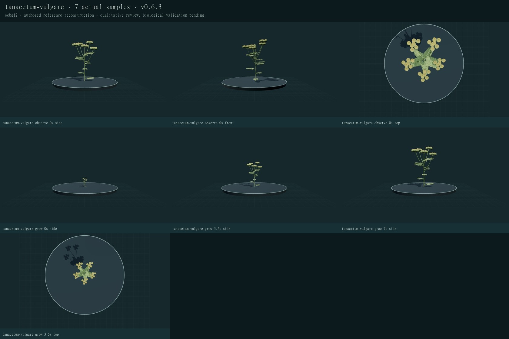
Plantae · Eukaryota · GBIF 3121319 · 7 actual samples · webgl2
Wormwood Artemisia absinthium
Open this model and its evidence → Compared and revised: Compared silvery divided foliage and small nodding heads against the account/reference, using small heads rather than large daisy-like rays.
Compared and revised: Compared silvery divided foliage and small nodding heads against the account/reference, using small heads rather than large daisy-like rays.
Remaining inaccuracies: The shoot remains too sparse and symmetric, silvery hairs are not individually resolved, and nodding-head orientations/compound leaf hierarchy need refinement. Mature-form scaling is not growth.
Real image: David Monniaux · CC BY-SA 3.0 · Original caption, imaging context and terms. Delivered SHA-256 f4d310f0471cfc4e7014ef78dd18ea5c9d790d35a7eac0a37f444074a23d3200.
Photographed individual or cultivated form; colour, head form and life stage may vary. Geometry is an original qualitative illustration, not a scan of this specimen.
Source and movement scope
- Artemisia absinthium (Absinthe, Absinthium, Armoise Absinthe, Artemisia, Common Wormwood, Madderwort, Wormwood) | North Carolina Extension Gardener Plant Toolbox: Qualitative species morphology/ecology context. No measured shape, trajectories, developmental timing or physiological validation imported. Retrieved source account; general morphology only, not validation of this reconstruction. Retrieval: readable account.
- GBIF · Accepted species taxonomy: Taxonomic name/rank/family matching only; not behavior or native-range evidence.
- Licensed real organism reference and imaging context: Actual reference image and original caption/creator/license; not universal phenotype or biological validation.
- Anchored size study · partial: Authored reference reconstruction from qualitative morphology and the separately licensed image. Shape, pigmentation, stage, dimensions and playback are not measured or independently validated. Anchored size is a display interpolation, not a growth, ontogenetic or biomechanical simulation.
Same model identifier: reference-artemisia-absinthium. Display seconds have no calibrated biological time.
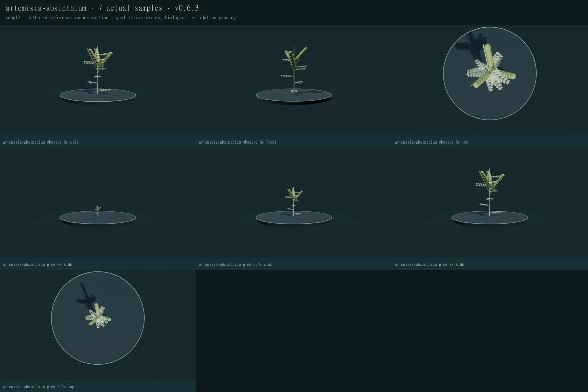
Plantae · Eukaryota · GBIF 5392252 · 7 actual samples · webgl2
Common chicory Cichorium intybus
Open this model and its evidence → Compared and revised: Checked blue all-ligulate heads, branched stems and a basal leaf rosette, with no yellow central disc falsely added.
Compared and revised: Checked blue all-ligulate heads, branched stems and a basal leaf rosette, with no yellow central disc falsely added.
Remaining inaccuracies: Heads remain too star-like and the involucre/blue anther columns and scabrid texture are incomplete; upper foliage is too regular. Taproot and daily head closure are not implemented.
Real image: Alvesgaspar · CC BY 2.5 · Original caption, imaging context and terms. Delivered SHA-256 b21294ac533043c9f2fdb9ac2d2bcc31923c956616b4e548cd59ef4e5cd40dce.
Photographed individual or cultivated form; colour, head form and life stage may vary. Geometry is an original qualitative illustration, not a scan of this specimen.
Source and movement scope
- Cichorium intybus (Blue Sailors, Chicory, Coffeeweed, Common Chicory, Cornflower, Italian Dandelion, Succory) | North Carolina Extension Gardener Plant Toolbox: Qualitative species morphology/ecology context. No measured shape, trajectories, developmental timing or physiological validation imported. Retrieved source account; general morphology only, not validation of this reconstruction. Retrieval: readable account.
- GBIF · Accepted species taxonomy: Taxonomic name/rank/family matching only; not behavior or native-range evidence.
- Licensed real organism reference and imaging context: Actual reference image and original caption/creator/license; not universal phenotype or biological validation.
- Anchored size study · partial: Authored reference reconstruction from qualitative morphology and the separately licensed image. Shape, pigmentation, stage, dimensions and playback are not measured or independently validated. Anchored size is a display interpolation, not a growth, ontogenetic or biomechanical simulation.
Same model identifier: reference-cichorium-intybus. Display seconds have no calibrated biological time.
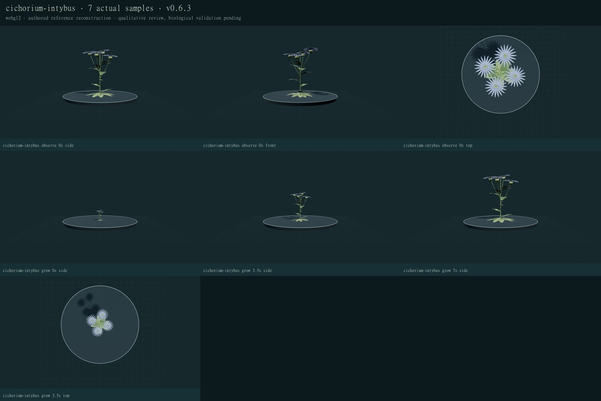
Plantae · Eukaryota · GBIF 5394163 · 7 actual samples · webgl2
Common dandelion aggregate Taraxacum officinale
Open this model and its evidence → Compared and revised: Checked toothed basal leaves, a leafless scape and an all-ligulate yellow head. Preserved the species-aggregate caveat and a single flowering-stage illustration.
Compared and revised: Checked toothed basal leaves, a leafless scape and an all-ligulate yellow head. Preserved the species-aggregate caveat and a single flowering-stage illustration.
Remaining inaccuracies: Leaf lobes are too regular, scape/involucre shape and ligule layering are simplified; root, pappus and apomictic microspecies are not resolved. Scaling is not germination, flowering or seed dispersal.
Real image: H. Zell · CC BY-SA 3.0 · Original caption, imaging context and terms. Delivered SHA-256 d9761a4336f21a1a7a2c8d595557950af82b996467df4a4a57e6da21f34b1124.
Photograph recorded under the T. officinale aggregate. Apomictic microspecies and species-boundary uncertainty are not resolved by the model.
Source and movement scope
- Taraxacum officinale (Dandelion, Lion's Tooth) | North Carolina Extension Gardener Plant Toolbox: Qualitative species morphology/ecology context. No measured shape, trajectories, developmental timing or physiological validation imported. Retrieved source account; general morphology only, not validation of this reconstruction. Retrieval: readable account.
- GBIF · Accepted species taxonomy: Taxonomic name/rank/family matching only; not behavior or native-range evidence.
- Licensed real organism reference and imaging context: Actual reference image and original caption/creator/license; not universal phenotype or biological validation.
- Anchored size study · partial: Authored reference reconstruction from qualitative morphology and the separately licensed image. Shape, pigmentation, stage, dimensions and playback are not measured or independently validated. Anchored size is a display interpolation, not a growth, ontogenetic or biomechanical simulation.
Same model identifier: reference-taraxacum-officinale. Display seconds have no calibrated biological time.
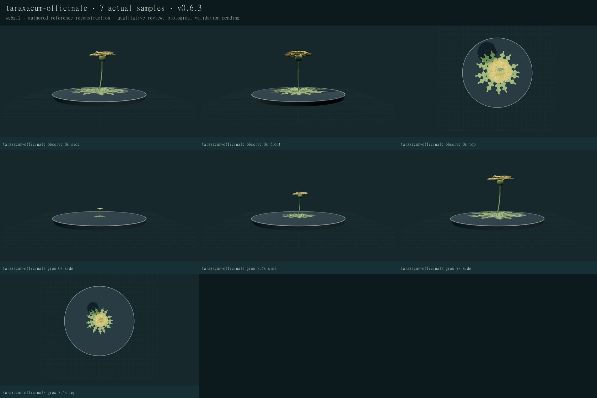
Plantae · Eukaryota · GBIF 7403263 · 7 actual samples · webgl2
Lettuce Lactuca sativa
Open this model and its evidence → Compared and revised: Compared the vegetative leafy habit with the iceberg-field photograph; explicitly identified the illustration as a loose rosette rather than that exact cultivar or a flowering shoot.
Compared and revised: Compared the vegetative leafy habit with the iceberg-field photograph; explicitly identified the illustration as a loose rosette rather than that exact cultivar or a flowering shoot.
Remaining inaccuracies: Blades are overly regular and vein patterns/ruffles approximate; cultivated head packing is absent. Roots, bolting, yellow flower heads and growth kinetics are not implemented.
Real image: en:User:Geographer · CC BY 1.0 · Original caption, imaging context and terms. Delivered SHA-256 ad49e21e1e922bffca2a4d9b2461011beb7cc31b3c60f31888fe743d7063dc54.
Iceberg lettuce field photograph; the model is a loose vegetative rosette, not this exact cultivar, not bolting or flowering.
Source and movement scope
- Lactuca sativa (Butterhead, Butterheads, Cos, Head Lettuce, Lactuca, Leaf Lettuce, Lettuce, Lettuces, Romaine, Romaines) | North Carolina Extension Gardener Plant Toolbox: Qualitative species morphology/ecology context. No measured shape, trajectories, developmental timing or physiological validation imported. Retrieved source account; general morphology only, not validation of this reconstruction. Retrieval: readable account.
- GBIF · Accepted species taxonomy: Taxonomic name/rank/family matching only; not behavior or native-range evidence.
- Licensed real organism reference and imaging context: Actual reference image and original caption/creator/license; not universal phenotype or biological validation.
- Anchored size study · partial: Authored reference reconstruction from qualitative morphology and the separately licensed image. Shape, pigmentation, stage, dimensions and playback are not measured or independently validated. Anchored size is a display interpolation, not a growth, ontogenetic or biomechanical simulation.
Same model identifier: reference-lactuca-sativa. Display seconds have no calibrated biological time.
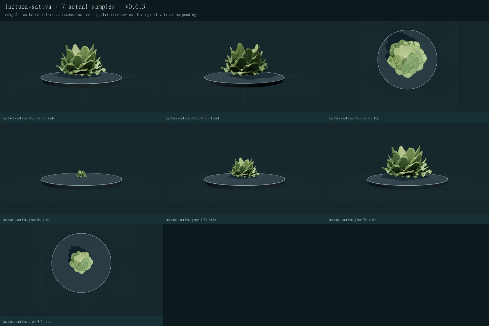
Fungi · Eukaryota · GBIF 3314876 · 3 actual samples · webgl2
Common stinkhorn Phallus impudicus
Open this model and its evidence → Compared and revised: Compared the volva, pale porous stalk and darker slime-bearing pitted head with the photograph and voucher-based field account. Kept decomposition unavailable.
Compared and revised: Compared the volva, pale porous stalk and darker slime-bearing pitted head with the photograph and voucher-based field account. Kept decomposition unavailable.
Remaining inaccuracies: Head pitting is sinusoidal rather than reticulate, pores are coarse, slime reflectance and spore detail are incomplete. No emergence, hyphal nutrient uptake, smell or insect dispersal mechanism.
Real image: Jörg Hempel · CC BY-SA 3.0 de · Original caption, imaging context and terms. Delivered SHA-256 9d4556fbf2b53ef53bb9c7fe14813ef8d4662111b55f52ec2a061fccc09f0049.
Macroscopic source-identified fruit body; microscopic/molecular identification and species-complex boundaries require specialist review.
Source and movement scope
- Phallus impudicus (MushroomExpert.Com): Qualitative species morphology/ecology context. No measured shape, trajectories, developmental timing or physiological validation imported. Retrieved source account; general morphology only, not validation of this reconstruction. Retrieval: readable account.
- GBIF · Accepted species taxonomy: Taxonomic name/rank/family matching only; not behavior or native-range evidence.
- Licensed real organism reference and imaging context: Actual reference image and original caption/creator/license; not universal phenotype or biological validation.
- Decomposition — pending · unavailable: Saprotrophic extracellular breakdown and uptake of dissolved nutrients are biological context only. No decomposition, nutrient transport, hyphal growth, spore release or splash mechanism is implemented.
Same model identifier: reference-phallus-impudicus. Display seconds have no calibrated biological time.
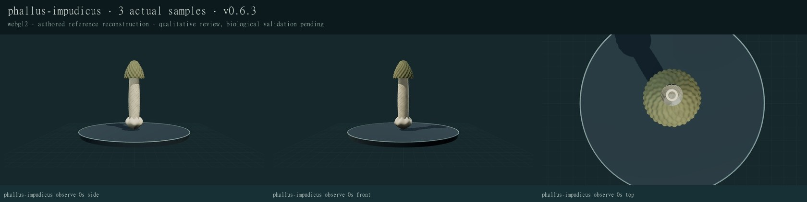
Fungi · Eukaryota · GBIF 5239476 · 3 actual samples · webgl2
Red cage fungus Clathrus ruber
Open this model and its evidence → Compared and revised: Rejected a photograph captioned Clathrus crispus and selected a source-identified C. ruber image. Closed the upper lattice and varied its edges after render review.
Compared and revised: Rejected a photograph captioned Clathrus crispus and selected a source-identified C. ruber image. Closed the upper lattice and varied its edges after render review.
Remaining inaccuracies: The lattice remains too geometric, lacks spongy wall microstructure and inner gleba patches; volva is stylized. No expansion from the egg, insect interaction or decomposition is simulated.
Real image: Albarubescens · CC BY-SA 4.0 · Original caption, imaging context and terms. Delivered SHA-256 88fe35117b500704fd7847412cc2886e34753c11859ab116092585e687226a39.
Macroscopic source-identified fruit body; microscopic/molecular identification and species-complex boundaries require specialist review.
Source and movement scope
- Clathrus ruber (MushroomExpert.Com): Qualitative species morphology/ecology context. No measured shape, trajectories, developmental timing or physiological validation imported. Retrieved source account; general morphology only, not validation of this reconstruction. Retrieval: readable account.
- GBIF · Accepted species taxonomy: Taxonomic name/rank/family matching only; not behavior or native-range evidence.
- Licensed real organism reference and imaging context: Actual reference image and original caption/creator/license; not universal phenotype or biological validation.
- Decomposition — pending · unavailable: Saprotrophic extracellular breakdown and uptake of dissolved nutrients are biological context only. No decomposition, nutrient transport, hyphal growth, spore release or splash mechanism is implemented.
Same model identifier: reference-clathrus-ruber. Display seconds have no calibrated biological time.
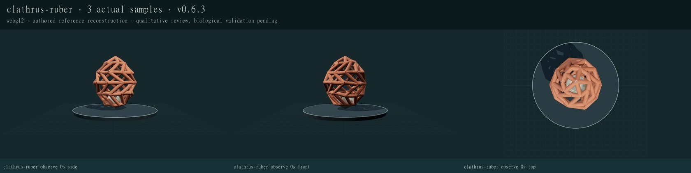
Fungi · Eukaryota · GBIF 5239473 · 3 actual samples · webgl2
Dog stinkhorn Mutinus caninus
Open this model and its evidence → Compared and revised: Checked the slender pale stalk, tapered fertile tip and basal volva with the reference and recent field account; kept the apex integrated rather than adding a detached mushroom cap.
Compared and revised: Checked the slender pale stalk, tapered fertile tip and basal volva with the reference and recent field account; kept the apex integrated rather than adding a detached mushroom cap.
Remaining inaccuracies: The apex still has a visible authored junction and inadequate dark gleba coverage; porous tissue is coarse and stage variation omitted. Similar stinkhorns need microscopic/taxonomic scrutiny; no growth or spore dispersal.
Real image: Holger Krisp · CC BY 3.0 · Original caption, imaging context and terms. Delivered SHA-256 0ecf2b70c462377f144d294274aa3778d4644ffb1fdfaface96033b25c701c4b.
Macroscopic source-identified fruit body; microscopic/molecular identification and species-complex boundaries require specialist review.
Source and movement scope
- Mutinus caninus (MushroomExpert.Com): Qualitative species morphology/ecology context. No measured shape, trajectories, developmental timing or physiological validation imported. Retrieved source account; general morphology only, not validation of this reconstruction. Retrieval: readable account.
- GBIF · Accepted species taxonomy: Taxonomic name/rank/family matching only; not behavior or native-range evidence.
- Licensed real organism reference and imaging context: Actual reference image and original caption/creator/license; not universal phenotype or biological validation.
- Decomposition — pending · unavailable: Saprotrophic extracellular breakdown and uptake of dissolved nutrients are biological context only. No decomposition, nutrient transport, hyphal growth, spore release or splash mechanism is implemented.
Same model identifier: reference-mutinus-caninus. Display seconds have no calibrated biological time.
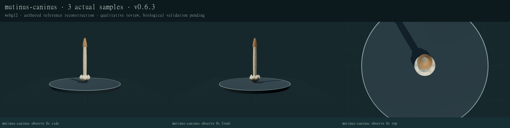
Fungi · Eukaryota · GBIF 8697118 · 3 actual samples · webgl2
Lantern stinkhorn Lysurus mokusin
Open this model and its evidence → Compared and revised: Compared an angular/ribbed stalk and joined apical arms with the field account and photograph; kept darker inner arm surfaces.
Compared and revised: Compared an angular/ribbed stalk and joined apical arms with the field account and photograph; kept darker inner arm surfaces.
Remaining inaccuracies: The stalk is still rounded between weak ridges, arms too symmetric and gleba sparse. Texture lacks spongy pits; no emergence, insect dispersal or decomposition mechanism is implemented.
Real image: Nathan Wilson · CC BY-SA 3.0 · Original caption, imaging context and terms. Delivered SHA-256 9f01d04cd3851341d54a0d8cf93ef8e896558ed6c461d08b19fe3f6dc3eca798.
Macroscopic source-identified fruit body; microscopic/molecular identification and species-complex boundaries require specialist review.
Source and movement scope
- Lysurus mokusin (MushroomExpert.Com): Qualitative species morphology/ecology context. No measured shape, trajectories, developmental timing or physiological validation imported. Retrieved source account; general morphology only, not validation of this reconstruction. Retrieval: readable account.
- GBIF · Accepted species taxonomy: Taxonomic name/rank/family matching only; not behavior or native-range evidence.
- Licensed real organism reference and imaging context: Actual reference image and original caption/creator/license; not universal phenotype or biological validation.
- Decomposition — pending · unavailable: Saprotrophic extracellular breakdown and uptake of dissolved nutrients are biological context only. No decomposition, nutrient transport, hyphal growth, spore release or splash mechanism is implemented.
Same model identifier: reference-lysurus-mokusin. Display seconds have no calibrated biological time.
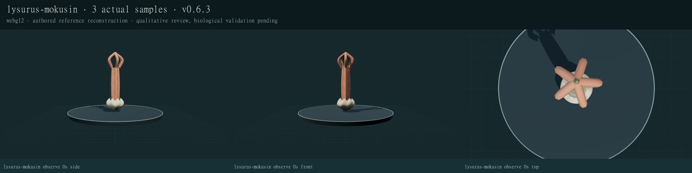
Fungi · Eukaryota · GBIF 4911642 · 3 actual samples · webgl2
Anemone stinkhorn Aseroe rubra
Open this model and its evidence → Compared and revised: Checked paired radiating red arms, central gleba region, short stalk and volva against the photograph and field account.
Compared and revised: Checked paired radiating red arms, central gleba region, short stalk and volva against the photograph and field account.
Remaining inaccuracies: Arm junctions, downward curvature and disc breadth are simplified; volva is too globular and gleba too smooth. Arm count is an illustrative individual choice; no expansion or fly-assisted dispersal.
Real image: cas Liber · Public domain · Original caption, imaging context and terms. Delivered SHA-256 275e7ed5cd301a70664372b87a03f5ff0508ee324f7c49c59429ed130ffe4021.
Macroscopic source-identified fruit body; microscopic/molecular identification and species-complex boundaries require specialist review.
Source and movement scope
- Aseroe rubra (MushroomExpert.Com): Qualitative species morphology/ecology context. No measured shape, trajectories, developmental timing or physiological validation imported. Retrieved source account; general morphology only, not validation of this reconstruction. Retrieval: readable account.
- GBIF · Accepted species taxonomy: Taxonomic name/rank/family matching only; not behavior or native-range evidence.
- Licensed real organism reference and imaging context: Actual reference image and original caption/creator/license; not universal phenotype or biological validation.
- Decomposition — pending · unavailable: Saprotrophic extracellular breakdown and uptake of dissolved nutrients are biological context only. No decomposition, nutrient transport, hyphal growth, spore release or splash mechanism is implemented.
Same model identifier: reference-aseroe-rubra. Display seconds have no calibrated biological time.
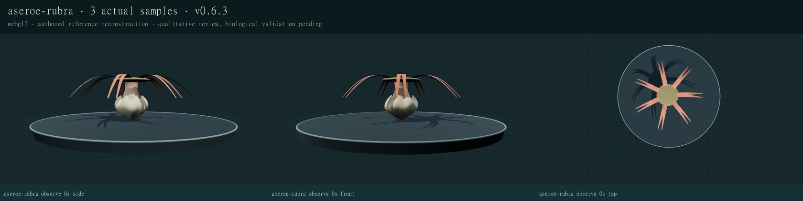
Fungi · Eukaryota · GBIF 2554367 · 3 actual samples · webgl2
Collared earthstar Geastrum triplex
Open this model and its evidence → Compared and revised: Compared recurved rays, a raised spore sac and collar with the real fruit body; retained a collar-present mature stage rather than making it universal.
Compared and revised: Compared recurved rays, a raised spore sac and collar with the real fruit body; retained a collar-present mature stage rather than making it universal.
Remaining inaccuracies: Ray thickness/cracks and collar breakage are incomplete; spore-sac skin is too smooth, and the pore/peristome is coarse. Species-complex identity and hydration-stage differences remain unresolved; no spore puffing.
Real image: JJ Harrison ( https://www.jjharrison.com.au/ ) · CC BY-SA 4.0 · Original caption, imaging context and terms. Delivered SHA-256 7595bf9e7e3048dd81340f9a313b8db7a85b8bac3c9ec3c22f9c5389846d142b.
Macroscopic earthstar photograph; collar/ray shape varies with developmental stage and hydration. Species-complex boundaries are not resolved.
Source and movement scope
- Geastrum triplex (MushroomExpert.Com): Qualitative species morphology/ecology context. No measured shape, trajectories, developmental timing or physiological validation imported. Retrieved source account; general morphology only, not validation of this reconstruction. Retrieval: readable account.
- GBIF · Accepted species taxonomy: Taxonomic name/rank/family matching only; not behavior or native-range evidence.
- Licensed real organism reference and imaging context: Actual reference image and original caption/creator/license; not universal phenotype or biological validation.
- Decomposition — pending · unavailable: Saprotrophic extracellular breakdown and uptake of dissolved nutrients are biological context only. No decomposition, nutrient transport, hyphal growth, spore release or splash mechanism is implemented.
Same model identifier: reference-geastrum-triplex. Display seconds have no calibrated biological time.
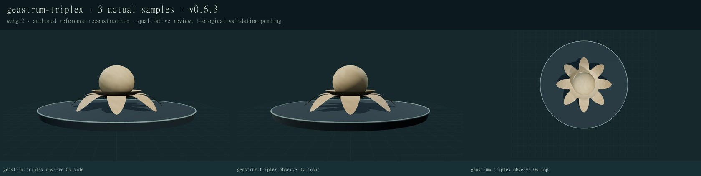
Fungi · Eukaryota · GBIF 5243575 · 3 actual samples · webgl2
Common bird’s nest fungus Crucibulum laeve
Open this model and its evidence → Compared and revised: Checked a smooth-inner nest cup and pale peridioles against the photograph/account. Separated overlapping peridioles after the first top-view render.
Compared and revised: Checked a smooth-inner nest cup and pale peridioles against the photograph/account. Separated overlapping peridioles after the first top-view render.
Remaining inaccuracies: Four exposed peridioles per illustrative cup are not a species-fixed count; funicular cords, young lid and true outer hairs/colour variation are absent. No splash-launch mechanics or nutrient uptake is working.
Real image: Grzegorz "Spike" Rendchen · CC BY-SA 3.0 · Original caption, imaging context and terms. Delivered SHA-256 d4a26ecfb29afef720b11f9ca3e3cb16e45e84d225bff7623a3c8f2d3a30660f.
Macroscopic source-identified fruit body; microscopic/molecular identification and species-complex boundaries require specialist review.
Source and movement scope
- Crucibulum laeve (MushroomExpert.Com): Qualitative species morphology/ecology context. No measured shape, trajectories, developmental timing or physiological validation imported. Retrieved source account; general morphology only, not validation of this reconstruction. Retrieval: readable account.
- GBIF · Accepted species taxonomy: Taxonomic name/rank/family matching only; not behavior or native-range evidence.
- Licensed real organism reference and imaging context: Actual reference image and original caption/creator/license; not universal phenotype or biological validation.
- Decomposition — pending · unavailable: Saprotrophic extracellular breakdown and uptake of dissolved nutrients are biological context only. No decomposition, nutrient transport, hyphal growth, spore release or splash mechanism is implemented.
Same model identifier: reference-crucibulum-laeve. Display seconds have no calibrated biological time.
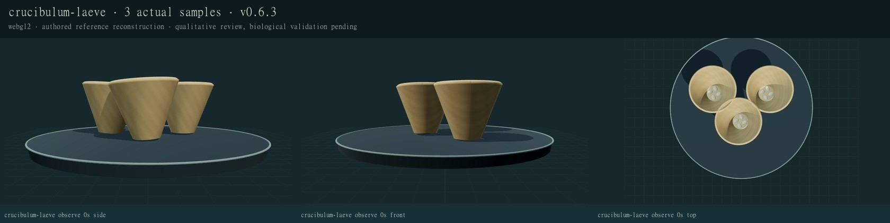
Fungi · Eukaryota · GBIF 5243151 · 3 actual samples · webgl2
Fluted bird’s nest fungus Cyathus striatus
Open this model and its evidence → Compared and revised: Resolved the fungal name apart from an extinct ostracod homonym. Compared inner striae, shaggy outer cup and darker peridioles; separated overlapping peridioles.
Compared and revised: Resolved the fungal name apart from an extinct ostracod homonym. Compared inner striae, shaggy outer cup and darker peridioles; separated overlapping peridioles.
Remaining inaccuracies: Hair relief and grooving are too periodic, peridioles lack sheaths/cords and the cup rim is too even. Tropical look-alikes and microscopic spores need expert review; splash ejection/decomposition remain unavailable.
Real image: DidierFy · CC BY-SA 4.0 · Original caption, imaging context and terms. Delivered SHA-256 1342bc8a943db2716529ecd492c4c677e6aba681fc59fde076d1dc446450725d.
Mature and immature cups in a garden; caption identification retained, without microscopic spore confirmation.
Source and movement scope
- Cyathus striatus (MushroomExpert.Com): Qualitative species morphology/ecology context. No measured shape, trajectories, developmental timing or physiological validation imported. Retrieved source account; general morphology only, not validation of this reconstruction. Retrieval: readable account.
- GBIF · Accepted species taxonomy: Taxonomic name/rank/family matching only; not behavior or native-range evidence.
- Licensed real organism reference and imaging context: Actual reference image and original caption/creator/license; not universal phenotype or biological validation.
- Decomposition — pending · unavailable: Saprotrophic extracellular breakdown and uptake of dissolved nutrients are biological context only. No decomposition, nutrient transport, hyphal growth, spore release or splash mechanism is implemented.
Same model identifier: reference-cyathus-striatus. Display seconds have no calibrated biological time.
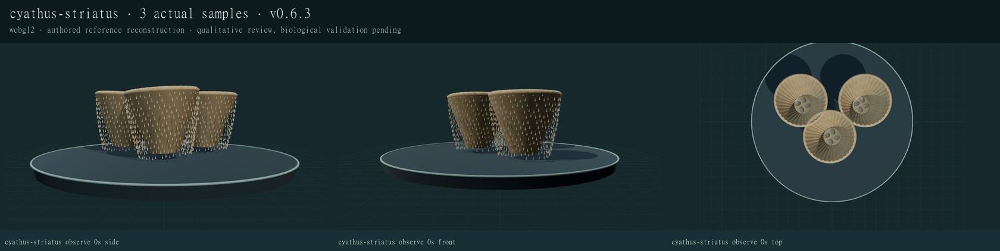
Microeukaryotes · Eukaryota · GBIF 7554446 · 7 actual samples · webgl2
Swan ciliate Lacrymaria olor
Open this model and its evidence → Compared and revised: Compared an anchored body, extensible neck and anterior head with the micrograph and primary hunting study. Corrected head distortion during shortening and retained the same surfaces.
Compared and revised: Compared an anchored body, extensible neck and anterior head with the micrograph and primary hunting study. Corrected head distortion during shortening and retained the same surfaces.
Remaining inaccuracies: Neck bends and extension range are strongly simplified, cell optics/internal granules and helical cytoskeleton are absent. No recorded trajectories, stochastic search law, force model or prey ingestion was imported; seconds are illustrative.
Real image: Polypompholyx · CC BY-SA 3.0 · Original caption, imaging context and terms. Delivered SHA-256 ce963fa3588e766fb63328e9df50bfe30d16ec111cac383c35f53b7631ee1390.
Photographed source-identified organism; illumination, individual variation and stage are not calibrated into this authored reconstruction.
Source and movement scope
Same model identifier: reference-lacrymaria-olor. Display seconds have no calibrated biological time.
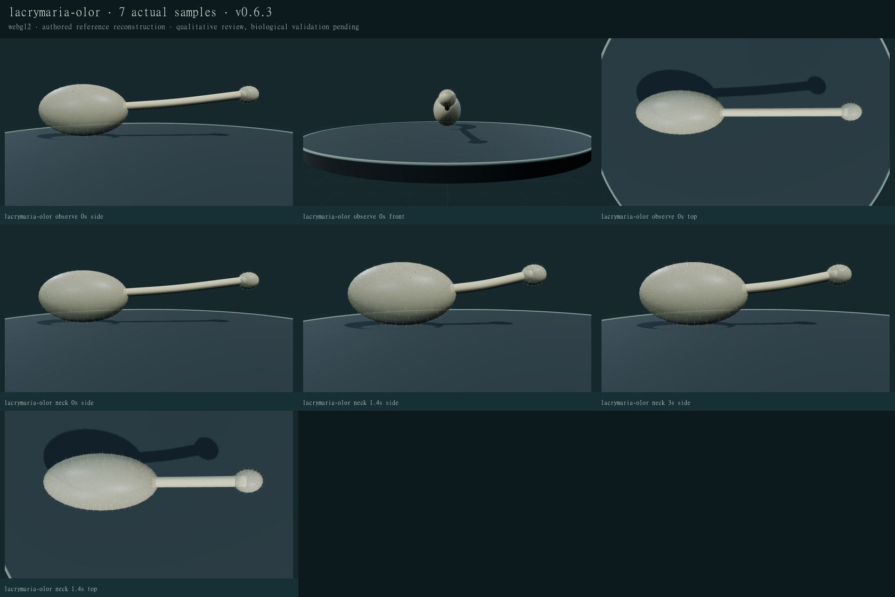
Microeukaryotes · Eukaryota · GBIF 8408280 · 3 actual samples · webgl2
Goose-necked ciliate Pseudomonilicaryon anser
Open this model and its evidence → Compared and revised: Reconciled the former Dileptus anser name to the accepted concept using primary typification. Compared the long anterior proboscis and mouth at its base with a real light micrograph.
Compared and revised: Reconciled the former Dileptus anser name to the accepted concept using primary typification. Compared the long anterior proboscis and mouth at its base with a real light micrograph.
Remaining inaccuracies: The body/proboscis are too smooth and regular; moniliform nucleus, cytological diagnostic structures and oral ciliation are incomplete. Identity follows a creator’s provisional light-microscope identification; feeding is unavailable.
Real image: Azbiostudent · Public domain · Original caption, imaging context and terms. Delivered SHA-256 cd16183a805db3c2b61c32198a7420ea18e1d36d8daca7c424a1ed041f7336b3.
Light micrograph identified by its creator under the former name Dileptus anser; accepted name reconciled to Pseudomonilicaryon anser. Identification remains provisional without diagnostic cytology.
Source and movement scope
Same model identifier: reference-pseudomonilicaryon-anser. Display seconds have no calibrated biological time.
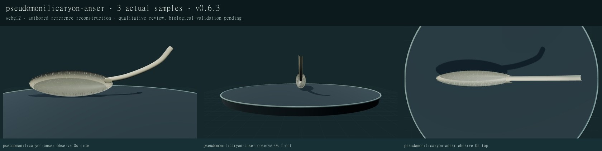
Microeukaryotes · Eukaryota · GBIF 7940383 · 7 actual samples · webgl2
Bell-stalk ciliate Vorticella campanula
Open this model and its evidence → Compared and revised: Replaced a historical drawing candidate with a closer CC0 light micrograph. Compared a granular bell-shaped cell, oral rim and coiling stalk; documented GBIF’s campanulla spelling versus NIES campanula.
Compared and revised: Replaced a historical drawing candidate with a closer CC0 light micrograph. Compared a granular bell-shaped cell, oral rim and coiling stalk; documented GBIF’s campanulla spelling versus NIES campanula.
Remaining inaccuracies: Granule positions are arbitrary; oral membrane, annulations and worm-like macronucleus are incomplete. Stalk coiling is authored and uncalibrated, not measured V. convallaria biomechanics or simulated feeding flow.
Real image: Luka S. (someplant) · CC0 1.0 · Original caption, imaging context and terms. Delivered SHA-256 0d5f7be77e48607142f1cfdae1f1978c78707fbf512fdfe67fc33e612da5dc4b.
Community-identified micrograph, research-grade at retrieval; species identification is not a molecular or specialist validation. Optical contrast and reserve granules are not natural opaque body paint.
Source and movement scope
- Vorticella Morphology: Species-specific morphology context; no biomechanics/coordinates/rates imported. Retrieved source account; general morphology only, not validation of this reconstruction. Retrieval: readable account.
- GBIF · Accepted species taxonomy: Taxonomic name/rank/family matching only; not behavior or native-range evidence.
- Licensed real organism reference and imaging context: Actual reference image and original caption/creator/license; not universal phenotype or biological validation.
- Stalk contraction study · partial: Authored reference reconstruction from qualitative morphology and the separately licensed image. Shape, pigmentation, stage, dimensions and playback are not measured or independently validated. Appendage/deformation controls are partial studies; feeding, forces, fluid dynamics and calibrated locomotion are absent.
Same model identifier: reference-vorticella-campanula. Display seconds have no calibrated biological time.
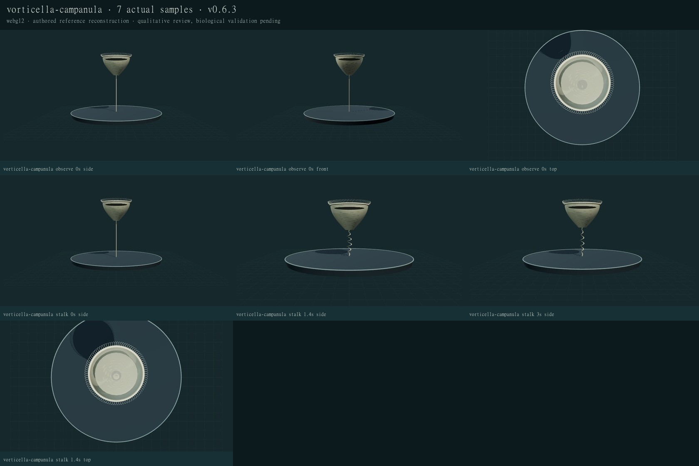
Microeukaryotes · Eukaryota · GBIF 7559248 · 3 actual samples · webgl2
Inflated colpoda Colpoda inflata
Open this model and its evidence → Compared and revised: Selected a real source-identified C. inflata micrograph instead of assigning that image to C. cucullus. Replaced an overly open curved form with a closed indented reniform cell.
Compared and revised: Selected a real source-identified C. inflata micrograph instead of assigning that image to C. cucullus. Replaced an overly open curved form with a closed indented reniform cell.
Remaining inaccuracies: Oral groove, micronucleus/macronucleus and detailed ciliary rows are unresolved; the body is too opaque and vacuoles are absent. Blue optical background is not natural cell pigment; feeding/cyst formation are unavailable.
Real image: Dr. Eugen Lehle · CC BY-SA 3.0 · Original caption, imaging context and terms. Delivered SHA-256 73231f589c327dfb8b54a929900d54aa62d8b5b945ca6027f961e947aceadfd2.
Light micrograph with numerous food vacuoles and blue optical background; pigment and internal appearance depend on microscopy, not a naturally blue organism.
Source and movement scope
- Colpoda Morphology: Species morphology/taxonomic context; no trajectories, rates or measurements imported. Retrieved source account; general morphology only, not validation of this reconstruction. Retrieval: readable account.
- GBIF · Accepted species taxonomy: Taxonomic name/rank/family matching only; not behavior or native-range evidence.
- Licensed real organism reference and imaging context: Actual reference image and original caption/creator/license; not universal phenotype or biological validation.
- Particle capture — pending · unavailable: Biological process documented in the species context; no working simulation of this mechanism is claimed.
Same model identifier: reference-colpoda-inflata. Display seconds have no calibrated biological time.
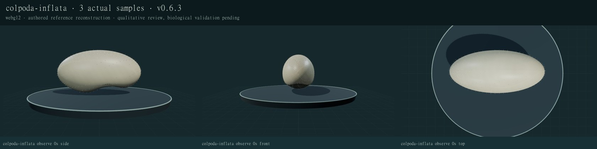
Microeukaryotes · Eukaryota · GBIF 8312067 · 3 actual samples · webgl2
Bursaria Bursaria truncatella
Open this model and its evidence → Compared and revised: Compared the large sac-like outline and broad oral cavity with the light micrograph and NIES account; retained an open surface excavation rather than a painted mouth.
Compared and revised: Compared the large sac-like outline and broad oral cavity with the light micrograph and NIES account; retained an open surface excavation rather than a painted mouth.
Remaining inaccuracies: The excavation remains an overly large cut-out and the body overly regular; internal vacuoles, oral structures and ciliary rows are incomplete. No food transport or ingestion is working, and microscopy cannot validate a natural opaque texture.
Real image: Ken Kneidel · CC0 · Original caption, imaging context and terms. Delivered SHA-256 6b28c1ac6ca38761d29fbceabf580f8350606319807f59d8278709f30d57e4df.
Light micrograph from an openly dedicated iNaturalist image; species ID follows the source record and needs specialist confirmation.
Source and movement scope
- Bursaria Morphology: Qualitative species morphology/ecology context. No measured shape, trajectories, developmental timing or physiological validation imported. Retrieved source account; general morphology only, not validation of this reconstruction. Retrieval: readable account.
- GBIF · Accepted species taxonomy: Taxonomic name/rank/family matching only; not behavior or native-range evidence.
- Licensed real organism reference and imaging context: Actual reference image and original caption/creator/license; not universal phenotype or biological validation.
- Particle capture — pending · unavailable: Biological process documented in the species context; no working simulation of this mechanism is claimed.
Same model identifier: reference-bursaria-truncatella. Display seconds have no calibrated biological time.
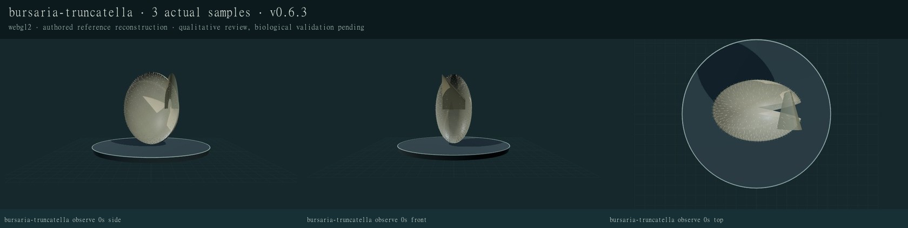
Bacteria · Bacteria · GBIF 3222442 · 3 actual samples · webgl2
Cholera vibrio Vibrio cholerae
Open this model and its evidence →![Transmission electron microsope image of Vibrio choleraethat has been negatively stained. Vibrio choleraeis the bacteria responsible for the gastroinestinal disease cholera. In order to get the disease cholera, the bacteria must be able to colonize in the small intestine and a critical factor necessary for this colonization is the toxin-co-regulated pilus(TCP). 0395 is a wild type strain, showing the normal bundling of toxin-co-regulated pilus(TCP). Wild-type pili are clearly visible as 7 nm fibres that form bundles @ 0.2Ð0.3 µm wide and 3Ð6 µm long.](../../assets/photo-vibrio-cholerae-D-esxLwc.jpg) Compared and revised: Checked a curved rod and polar flagellum against the negatively stained TEM and culture context, retaining neutral illustrative colour rather than image contrast as skin.
Compared and revised: Checked a curved rod and polar flagellum against the negatively stained TEM and culture context, retaining neutral illustrative colour rather than image contrast as skin.
Remaining inaccuracies: Single-cell proportions, flagellar insertion and envelope detail are approximate; strain/state variation is not represented. No motor rotation, chemotaxis, cell division or quantitative path is implemented.
Real image: Tom Kirn, Ron Taylor, Louisa Howard - Dartmouth Electron Microscope Facility · Public domain · Original caption, imaging context and terms. Delivered SHA-256 080fe79b652a35c2d8f0cd8d4d3645f6dd640df56d34b54c4e92329b17c435ea.
Negatively stained transmission electron micrograph. Contrast is preparation-dependent; multiple cells and background flagella are not calibrated into the single-cell illustration.
Source and movement scope
- Details - Leibniz Institute DSMZ: Qualitative species morphology/ecology context. No measured shape, trajectories, developmental timing or physiological validation imported. Retrieved source account; general morphology only, not validation of this reconstruction. Retrieval: readable account.
- GBIF · Accepted species taxonomy: Taxonomic name/rank/family matching only; not behavior or native-range evidence.
- Licensed real organism reference and imaging context: Actual reference image and original caption/creator/license; not universal phenotype or biological validation.
- Division — pending · unavailable: Biological process documented in the species context; no working simulation of this mechanism is claimed.
Same model identifier: reference-vibrio-cholerae. Display seconds have no calibrated biological time.
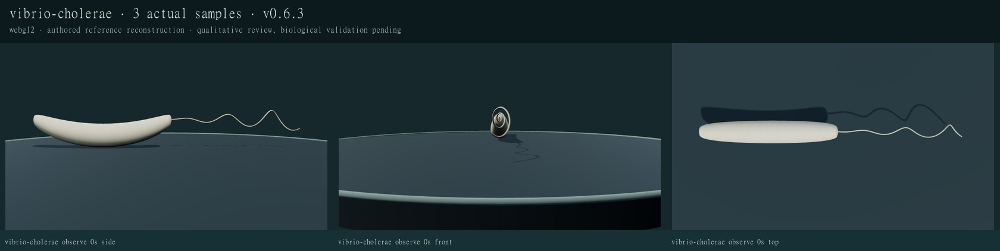
Bacteria · Bacteria · GBIF 3227657 · 3 actual samples · webgl2
Golden staphylococcus Staphylococcus aureus
Open this model and its evidence →![Under a very high magnification of 20,000x, this scanning electron micrograph (SEM) shows a strain of Staphylococcus aureus bacteria taken from a vancomycin intermediate resistant culture (VISA). Under SEM, one can not tell the difference between bacteria that are susceptible, or multidrug resistant, but with transmission electron microscopy (TEM), VISA isolates exhibit a thickening in the cell wall that may attribute to their reduced susceptibility to vancomycin . See PHIL 11156 for a black and white version of this image. VISA and VRSA are specific types of antimicrobial-resistant staph bacteria. While most staph bacteria are susceptible to the antimicrobial agent vancomycin some have developed resistance. VISA and VRSA cannot be successfully treated with vancomycin because these organisms are no longer susceptibile to vancomycin. However, to date, all VISA and VRSA isolates have been susceptible to other Food and Drug Administration (FDA) approved drugs. How do VISA and VRSA get their names? Staph bacteria are classified as VISA or VRSA based on laboratory tests. Laboratories perform tests to determine if staph bacteria are resistant to antimicrobial agents that might be used for treatment of infections. For vancomycin and other antimicrobial agents, laboratories determine how much of the agent it requires to inhibit the growth of the organism in a test tube. The result of the test is usually expressed as a minimum inhibitory concentration (MIC) or the minimum amount of antimicrobial agent that inhibits bacterial growth in the test tube. Therefore, staph bacteria are classified as VISA if the MIC for vancomycin is 4-8µg/ml, and classified as VRSA if the vancomycin MIC is >16µg/ml.](../../assets/photo-staphylococcus-aureus-BqABMn1j.jpg) Compared and revised: Compared spherical cells in an irregular cluster with the CDC SEM, explicitly identifying purple/green as false colour and the imaged strain as vancomycin-intermediate.
Compared and revised: Compared spherical cells in an irregular cluster with the CDC SEM, explicitly identifying purple/green as false colour and the imaged strain as vancomycin-intermediate.
Remaining inaccuracies: The ten-cell cluster is illustrative, with arbitrary packing, simplified contact/envelope and no septal anatomy. The source strain does not validate all species phenotypes; cell division and growth remain unavailable.
Real image: Content Providers(s): CDC/ Matthew J. Arduino, DRPH Photo Credit: Janice Haney Carr · Public domain · Original caption, imaging context and terms. Delivered SHA-256 85d207f6ae8504f9bc8814d1a30de31e1c950558d1b3f544a70a9242ec75655f.
Colour-enhanced SEM of a vancomycin-intermediate strain at 20,000× from CDC. Purple and green are false colour, not living cell pigmentation.
Source and movement scope
- Details - Leibniz Institute DSMZ: Species morphology/taxonomic context; no trajectories, rates or measurements imported. Retrieved source account; general morphology only, not validation of this reconstruction. Retrieval: readable account.
- GBIF · Accepted species taxonomy: Taxonomic name/rank/family matching only; not behavior or native-range evidence.
- Licensed real organism reference and imaging context: Actual reference image and original caption/creator/license; not universal phenotype or biological validation.
- Division — pending · unavailable: Biological process documented in the species context; no working simulation of this mechanism is claimed.
Same model identifier: reference-staphylococcus-aureus. Display seconds have no calibrated biological time.
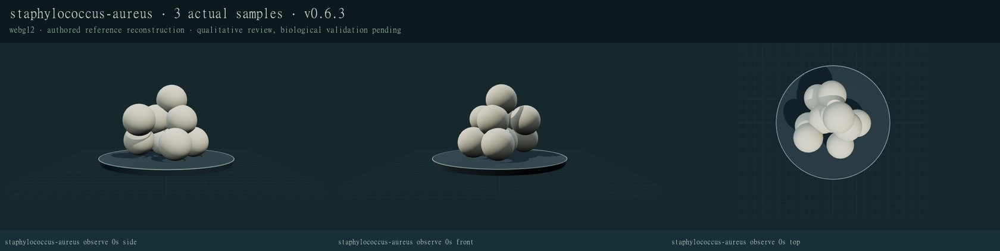